import math
import re
import warnings
import matplotlib.pyplot as plt
import numpy as np
import pandas as pd
import polars as pl
import seaborn as sns
import statsmodels.api as sm
import statsmodels.graphics.gofplots as gof
import xgboost as xgb
from feature_engine.encoding import OrdinalEncoder
from scipy import stats
from scipy.stats import (
chi2_contingency,
chisquare,
mannwhitneyu,
norm,
poisson,
ttest_1samp,
ttest_ind,
wilcoxon,
)
from sklearn.ensemble import (
GradientBoostingClassifier,
GradientBoostingRegressor,
RandomForestClassifier,
RandomForestRegressor,
)
from sklearn.feature_extraction.text import TfidfVectorizer
from sklearn.linear_model import LinearRegression, LogisticRegression
from sklearn.metrics import (
ConfusionMatrixDisplay,
RocCurveDisplay,
accuracy_score,
confusion_matrix,
f1_score,
mean_squared_error,
precision_score,
r2_score,
recall_score,
roc_auc_score,
root_mean_squared_error,
)
from sklearn.model_selection import (
GridSearchCV,
RandomizedSearchCV,
cross_validate,
train_test_split,
)
from sklearn.naive_bayes import GaussianNB
from sklearn.neighbors import KNeighborsClassifier, KNeighborsRegressor
from sklearn.preprocessing import StandardScaler
from sklearn.svm import SVC, SVR
from sklearn.tree import DecisionTreeClassifier, DecisionTreeRegressor
from statsmodels.formula.api import ols
from statsmodels.stats import outliers_influence as sm_oi
from statsmodels.stats.anova import anova_lm
from statsmodels.stats.descriptivestats import sign_test
from statsmodels.stats.proportion import proportions_ztest
import spacy
from wordcloud import WordCloud
from imblearn.over_sampling import SMOTE, RandomOverSampler
from imblearn.pipeline import make_pipeline
from imblearn.under_sampling import AllKNN, NearMiss, RandomUnderSampler, TomekLinks
sns.set_theme("notebook", style="whitegrid")
warnings.filterwarnings("ignore")SixSigma Study On Improving PII/PHI Classifications in DataBreach Analysis
Indian Statistical Institute-Hyderabad
1 Python Code Snippets.
def calculate_center_line(data, column_name):
"""Calculates the center line for the control chart."""
return data[column_name].mean()
def calculate_control_limits(center, average_defects_per_unit, multiplier):
"""Calculates upper and lower control limits."""
std_dev = np.sqrt(average_defects_per_unit)
upper_limit = center + multiplier * std_dev
lower_limit = center - multiplier * std_dev
return upper_limit, lower_limit
def create_c_chart(data):
"""Creates a C chart for the given data."""
center_line = calculate_center_line(data, "no_of_resources")
control_limits = calculate_control_limits(
center_line, center_line, 3
) # 3 sigma limits
plt.figure(figsize=(10, 6))
plt.plot(data["row_nr"], data["no_of_resources"], "o-", label="no_of_resources")
plt.axhline(y=center_line, color="r", linestyle="--", label="Center Line")
plt.axhline(y=control_limits[0], color="b", linestyle="--", label="UCL")
plt.axhline(y=control_limits[1], color="b", linestyle="--", label="LCL")
plt.xlabel("Project")
plt.ylabel("Number of Resources")
plt.title("C Chart")
plt.legend()
plt.grid(True)
plt.show()
def create_run_chart(data, column_name):
"""Creates a run chart for the given data."""
plt.figure(figsize=(18, 6))
plt.plot(data.index, data[column_name], marker="o", linestyle="-")
plt.xlabel(
"Projects-From Jan to Dec-2023"
) # Assuming the index represents time periods
plt.ylabel(column_name) # Replace with the actual column name
plt.title("Run Chart for " + column_name)
plt.grid(True)
plt.show()
def custom_ols_qqplot(_resid):
"""Q-Q Plot of residuals"""
gof.qqplot(_resid, line="s")
plt.xlabel("Theoritical Quantiles.")
plt.ylabel("Sample Quantiles.")
plt.title("Normal Q-Q plot")
plt.show()
def get_six_sigma_caluclator():
"""ISI Custom SixSigma Calucator"""
while True:
### Inputs
print(f"---------")
print(f"############ Sigma Caluclator Inputs ############")
print(f"---------")
_mean = float(input("Enter the mean:"))
_sd = float(input("Enter Standard Deviation:"))
_LSL = float(input("Enter LSL:"))
_USL = float(input("Enter USL:"))
# Formulas and caluclations
ZLSL = (_LSL - _mean) / _sd
ZUSL = (_USL - _mean) / _sd
Area_ZLSL = norm.cdf(ZLSL)
Area_ZUSL = 1 - norm.cdf(ZUSL)
TOTAL_NC = Area_ZLSL + Area_ZUSL
YIELD = 1 - TOTAL_NC
CP_ = (_USL - _LSL) / (6 * _sd)
_A = (_USL - _mean) / (3 * _sd)
_B = (_mean - _LSL) / (3 * _sd)
CPK_ = min(_A, _B)
SIGMA_LEVEL = round(1.5 + norm.ppf(YIELD), 5)
DPMO = TOTAL_NC * 1000000
# Output
print(f"---------")
print(f"#### Summary Report ####")
print(f"---------")
print(f"Total NonConfirmances:{round(TOTAL_NC,5)}")
print(f"Yield:{round(YIELD,5)}")
print(f"CP:{round(CP_,5)}")
print(f"CPK:{round(CPK_,5)}")
print(f"SIGMA_LEVEL:{round(SIGMA_LEVEL,5)}")
print(f"DPMO:{round(DPMO,5)}")
print(f"---------")
_next = input(
"Would you like to continue to use sigma caluclator type 'yes' if so :"
)
if _next.lower() == "yes":
continue
else:
print(f"Thanks for using Sigma Caluclator..")
print(f"#### END ####")
break# TEXT MINING FUNCTIONS
def get_tidy_text(_txt):
_doc = DBAS_NLP(_txt)
_tidy_word = [token.text for token in _doc if not token.is_stop]
return " ".join(_tidy_word)
def get_lemma_pos(_txt):
_doc = DBAS_NLP(_txt)
_d = {"_POS": [], "_LEMMA": []}
for _token in _doc:
_d["_POS"].append(_token.pos_)
_d["_LEMMA"].append(_token.lemma_)
return _d
def _generate_word_cloud(_txt):
x, y = np.ogrid[:300, :300]
mask = (x - 150) ** 2 + (y - 150) ** 2 > 130**2
mask = 255 * mask.astype(int)
wc = WordCloud(background_color="white", repeat=True, mask=mask)
wc.generate(_txt)
plt.axis("off")
plt.imshow(wc, interpolation="bilinear")
plt.show()
def get_word_rep(_word, _rep):
repeated_word = f"{_word} " * _rep
return repeated_word
df_challenges = pl.read_csv(
r"/Users/malleshamyamulla/Desktop/SSBBA/MBB_PROJECT/data/dbas_sds_challenges.csv"
).with_row_count()
los_samples = []
for _ in range(10):
_df = df_challenges.sample(15, with_replacement=False,seed=100)
los_samples.append(_df)
df_conso = pl.concat(los_samples).to_pandas()
DBAS_NLP = spacy.load(
"en_core_web_sm"
)
df_conso["_tidy_text_1"] = df_conso["#CHALLENGE"].apply(lambda x: get_tidy_text(x))
los_doc_dicts = []
for _sen in df_conso["_tidy_text_1"]:
_d = get_lemma_pos(_sen)
los_doc_dicts.append(_d)
los_dfs = []
for _d in los_doc_dicts:
_DF = pd.DataFrame(_d)
los_dfs.append(_DF)
DF_POS = pd.concat(los_dfs)
DF_POS_TIDY = DF_POS[DF_POS["_POS"] != "PUNCT"]
_LOS_NOUNS = (
DF_POS_TIDY[DF_POS_TIDY["_POS"] == "NOUN"]
.groupby("_LEMMA")
.count()
.reset_index()
.sort_values("_POS", ascending=False)
)
_ADJCT = (
DF_POS_TIDY[DF_POS_TIDY["_POS"] == "ADJ"]
.groupby("_LEMMA")
.count()
.reset_index()
.sort_values("_POS", ascending=False)
)
_VERBS = (
DF_POS_TIDY[DF_POS_TIDY["_POS"] == "VERB"]
.groupby("_LEMMA")
.count()
.reset_index()
.sort_values("_POS", ascending=False)
)
LOS_VERBS = _VERBS[["_LEMMA", "_POS"]].apply(lambda x: get_word_rep(x[0], x[1]), axis=1)
LOS_NOUNS = _LOS_NOUNS[["_LEMMA", "_POS"]].apply(lambda x: get_word_rep(x[0], x[1]), axis=1)
LOS_ADJ = _ADJCT[["_LEMMA", "_POS"]].apply(lambda x: get_word_rep(x[0], x[1]), axis=1)
todos_verb_list = []
for _verb in LOS_VERBS:
_vs = _verb.split(" ")
todos_verb_list.extend(_vs)
todos_noun_list = []
for _verb in LOS_NOUNS:
_vs = _verb.split(" ")
todos_noun_list.extend(_vs)
todos_adj_list = []
for _verb in LOS_ADJ:
_vs = _verb.split(" ")
todos_adj_list.extend(_vs)
text_verb = " ".join([_word for _word in todos_verb_list if len(_word) != 0])
text_noun = " ".join([_word for _word in todos_noun_list if len(_word) != 0])
text_adj = " ".join([_word for _word in todos_adj_list if len(_word) != 0])## ANALYZE PHASE CODE
df_org = (
pl.read_csv(
r"/Users/malleshamyamulla/Desktop/SSBBA/MBB_PROJECT/data/DBAS_Projects_Data_Tidy_V3.csv"
)
.drop(["Started Date", "Complete Date", "NO_OF_DAYS", "NO_OF_SERVICE_WORKING_HRS"])
.with_columns(pl.col("Project Name").str.replace_all("PROJECT", "P"))
).filter(pl.col("accuracy_").is_not_null())
df_org.columns = [
"Pname",
"#Files",
"#Days",
"#Analyst",
"#PII_PHI",
"#FPS",
"#FNS",
"FPS_FNS",
"TPS_TNS",
"Accuracy",
]
DF_SSBB = df_org.filter((pl.col("#Files") > 10) & (pl.col("#Files") < 10000))
DF_SSBB_V2 = (
DF_SSBB.with_columns(
(pl.col("#PII_PHI") / pl.col("#Files")).alias("prop_of_pii_phi")
)
.with_columns(
pl.when((pl.col("#Days") >= 1) & (pl.col("#Days") < 8))
.then(pl.lit("1W").alias("weeks_bucket"))
.otherwise(None)
)
.with_columns(
pl.when((pl.col("#Days") >= 8) & (pl.col("#Days") < 15))
.then(pl.lit("2W").alias("weeks_bucket"))
.otherwise(pl.col("weeks_bucket"))
)
.with_columns(
pl.when((pl.col("#Days") >= 15) & (pl.col("#Days") < 22))
.then(pl.lit("3W").alias("weeks_bucket"))
.otherwise(pl.col("weeks_bucket"))
)
.with_columns(
pl.when((pl.col("#Days") >= 22) & (pl.col("#Days") < 29))
.then(pl.lit("4W").alias("weeks_bucket"))
.otherwise(pl.col("weeks_bucket"))
)
.with_columns(
pl.when((pl.col("#Days") >= 29))
.then(pl.lit("more than 4 weeks").alias("weeks_bucket"))
.otherwise(pl.col("weeks_bucket"))
)
.with_columns(
pl.when((pl.col("#PII_PHI") >= 1) & (pl.col("#PII_PHI") < 101))
.then(pl.lit("1-100").alias("pii_phi_bucket"))
.otherwise(None)
)
.with_columns(
[
pl.when((pl.col("#PII_PHI") >= 101) & (pl.col("#PII_PHI") < 501))
.then(pl.lit("101-500").alias("pii_phi_bucket"))
.otherwise(pl.col("pii_phi_bucket")),
]
)
.with_columns(
[
pl.when((pl.col("#PII_PHI") >= 501) & (pl.col("#PII_PHI") < 1001))
.then(pl.lit("500-1000").alias("pii_phi_bucket"))
.otherwise(pl.col("pii_phi_bucket")),
]
)
.with_columns(
[
pl.when((pl.col("#PII_PHI") >= 1001) & (pl.col("#PII_PHI") < 5001))
.then(pl.lit("1000-5000").alias("pii_phi_bucket"))
.otherwise(pl.col("pii_phi_bucket")),
]
)
.with_columns(
[
pl.when((pl.col("#PII_PHI") >= 5001))
.then(pl.lit("more than 5K").alias("pii_phi_bucket"))
.otherwise(pl.col("pii_phi_bucket")),
]
)
.with_columns(
pl.when(pl.col("#FPS") > pl.col("#FNS"))
.then(pl.lit("FPS>FNS"))
.otherwise(pl.lit("FNS>FPS"))
.alias("FPS_vs_FNS")
)
.with_columns(
pl.when(pl.col("FPS_FNS") > pl.col("TPS_TNS"))
.then(pl.lit("FPS_FNS>TPS_TNS"))
.otherwise(pl.lit("TPS_TNS>FPS_FNS"))
.alias("FPFN_vs_TPTN")
)
)
DF_SSBB_TIDY = DF_SSBB_V2.to_pandas()##IMPLEMENTATION PHASE CODE BLOCKS
def custom_string_tidy(texto):
"""Clean up all the punctuations from a message"""
## STEP-1
rgx_ltrs = re.compile(
"[\!|\"|\#|\$|\%|\&|'|\(|\)|\*|\+|\,|\-|\/|\:|\;|\<|\=|\>|\?|\[|\\|\]|\^|\_|\`|\{|\||\}|\~|\.]+|FRM\:[\w\W]+(SUBJ\:)?MSG\:|\@|http(s)?|HTTP(S)?|\n|\r"
)
tidy_1_txt = re.sub(rgx_ltrs, " ", str(texto))
tidy_2_txt = tidy_1_txt.strip()
return tidy_2_txt.lower()
def get_text_len(_txt):
return len(_txt)
def get_list_count(_txt):
_text_list = _txt.split(" ")
return len(_text_list)
def custom_classification_metrics_report(_model_type, _actual, _predicted):
_metric_dict = {
"Accuracy": [],
"ROC-AUC": [],
"F1-Score": [],
"Precision": [],
"Recall": [],
}
_metric_dict["Accuracy"].append(round(accuracy_score(_actual, _predicted), 5))
_metric_dict["ROC-AUC"].append(round(roc_auc_score(_actual, _predicted), 5))
_metric_dict["F1-Score"].append(round(f1_score(_actual, _predicted), 5))
_metric_dict["Precision"].append(round(precision_score(_actual, _predicted), 5))
_metric_dict["Recall"].append(round(recall_score(_actual, _predicted), 5))
print("-------------------------------------------------------------------")
print(f"{_model_type}#:ConfusionMatrix and ROC-AUC Curve")
print("-------------------------------------------------------------------")
_plt = ConfusionMatrixDisplay(confusion_matrix(_actual, _predicted))
_plt.plot()
RocCurveDisplay.from_predictions(_actual, _predicted)
plt.show()
_df = pd.DataFrame(_metric_dict)
_df.index = [f"{_model_type}"]
return _df
# custom function
def tokenize_words(doc, lower_case=True):
"""Tokenizations Unigram"""
if lower_case is not True:
doc_prep = doc
doc_prep = str.lower(doc)
tokens = doc_prep.split()
return tokens
# custom function
def my_counter(doc):
"""Custom counter function"""
x_dict = {}
for item in doc:
if item in x_dict.keys():
x_dict[item] += 1
else:
x_dict[item] = 1
return x_dict
def computeTFIDF(corpus):
"""Given a list of sentences as "corpus", return the TF-IDF vectors for all the
sentences in the corpus as a numpy 2D matrix.
Each row of the 2D matrix must correspond to one sentence
and each column corresponds to a word in the text corpus.
Please order the rows in the same order as the
sentences in the input "corpus".
Ignore puncutation symbols like comma, fullstop,
exclamation, question-mark etc from the input corpus.
For e.g, If the corpus contains sentences with these
9 distinct words, ['and', 'document', 'first', 'is', 'one', 'second', 'the', 'third', 'this'],
then the first column of the 2D matrix will correpsond to word "and", the second column will
correspond to column "document" and so on.
Write this function using only basic Python code, inbuilt Data Structures and NumPy ONLY.
Implement the code as optimally as possible using the inbuilt data structures of Python.
"""
##############################################################
#### YOUR CODE BELOW as per the above instructions #######
##############################################################
# Create a dictionary to hold doc and their tokens
docs = {}
doc_tokens = {}
for idx, doc in enumerate(corpus):
docs["doc" + str(idx)] = tokenize_words(doc, lower_case=True)
doc_tokens["doc" + str(idx)] = tokenize_words(doc, lower_case=True)
# Count the number of tokens in each document
for key, val in docs.items():
docs[key] = my_counter(val)
# Caluclate term frequency in each document
for key, val in docs.items():
tot = 0
for valor in val.values():
tot += valor
for k, v in val.items():
val[k] = v / tot
# Extracting the keys from each document
x_keys = []
for val in docs.values():
x_keys.extend(list(val.keys()))
# Count total number of tokens across corpus
doc_counts = my_counter(x_keys)
# Caluclate IDF
for k, v in doc_counts.items():
doc_counts[k] = math.log(len(docs) / v)
# A dictionary to hold the IDF values of each word
doc_idf = {}
for k, v in docs.items():
lista = {}
for key in v.keys():
if key in doc_counts.keys():
for val in v.values():
lista[key] = doc_counts[key]
break
doc_idf[k] = lista
# Mapping IDF values to the corresponding words
docs_tf_idf = {}
for k, v in docs.items():
docs_tf_idf[k] = [docs[k], doc_idf[k]]
# Caluclate the TF-IDF and keep it in a dictionary
docs_tf_idf_cal = {}
for k, v in docs_tf_idf.items():
docs_tf_idf_cal[k] = {
x: np.round(v[0].get(x, 0) * v[1].get(x, 0), 2) for x in v[0].keys()
}
# An array to store all the TF-IDF's
x_tf_arr = []
for kt, vt in doc_tokens.items():
for v in vt:
if v in list(docs_tf_idf_cal.get(kt).keys()):
x_tf_arr.append(docs_tf_idf_cal.get(kt)[v])
# Create a matrix with 4*6
# _grader_std = np.array(x_tf_arr,dtype='float64').reshape(4,6)
return x_tf_arrdf_pii_phi_raw = pd.read_excel(
r"/Users/malleshamyamulla/Desktop/SSBBA/MBB_PROJECT/data/final/SDS_CLASSIFICATION_TIDY_FINAL_V2.xlsx"
)
df_pii_phi_raw["_dbas_field_name_tidy"] = df_pii_phi_raw["_dbas_field_name"].apply(
lambda x: custom_string_tidy(x)
)
df_pii_phi_raw["class_label"] = df_pii_phi_raw["class_label"].replace(
{"Y": 1, "N": 0, "y": 1}
)
df_pii_phi_raw["tidy_field_len"] = df_pii_phi_raw["_dbas_field_name_tidy"].apply(
lambda x: get_text_len(x)
)
df_pii_phi_raw["no_of_words"] = df_pii_phi_raw["_dbas_field_name_tidy"].apply(
lambda x: get_list_count(x)
)2 About Organization and team
Arete, a cybersecurity firm, provides a comprehensive suite of services designed to assist organizations in both post-incident recovery and proactive threat mitigation. Their global service portfolio encompasses the following:
Ransomware Response: Arete’s expertise facilitates efficient recovery from ransomware attacks, minimizing downtime and data loss.
Data Recovery and Restoration: The company offers secure data recovery and restoration solutions, ensuring business continuity following a cyber incident.
Managed Detection and Response (MDR): Arete’s MDR services provide continuous monitoring and rapid response to security threats, safeguarding critical assets.
Cybersecurity Strategy and Defense: The firm assists organizations in developing robust cybersecurity strategies and implementing effective defensive measures.
Forensic Investigations: Arete conducts in-depth forensic investigations to determine the scope and nature of cyberattacks, facilitating remediation and legal proceedings.
Regulatory Compliance Audits: Arete’s compliance audits ensure adherence to relevant data security regulations, minimizing legal and reputational risks.
Data Breach Analysis: The company offers comprehensive data breach analysis services, helping organizations identify vulnerabilities and implement preventative measures.
I’m working in data breach discovery services, a team of data breach analysts collaborates closely with incident responders and forensic investigators to generate comprehensive reports. These reports detail the specific data potentially accessed or exfiltrated by threat actors. This collaborative approach ensures the accuracy of data curation and the judicious development of notification lists, enabling clients to comply with relevant legal obligations.
3 Introduction to SixSigma methodolgies.
Six Sigma is a project-based approach for improving effectiveness and efficiency. It is a disciplined, customer-focused, data-driven approach for improving the performance of processes, products, or services.
Now,the term Six Sigma can be used to refer to a philosophy, a performance metric, or a methodology.
As a philosophy, Six Sigma strives for perfection in achieving effectiveness and efficiency in meeting customer and business requirements.Six Sigma is proactive and prevention-based instead of reactive and detection-based.
As a performance metric,Six Sigma refers to a level of quality that is near perfection. It strives for a defect level that is no more than 3.4 parts per million. Sigma is a letter in the Greek alphabet used to represent standard deviation, a measure of variation. A Six Sigma process is very consistent, with very little variation, and therefore has a very small standard deviation.So small that the distance from the mean, or the average, to the nearest specification limit is equivalent to six standard deviations, or six sigma’s. As a result, only 3.4 parts per million or less are out of specification.
As a methodology, Six Sigma refers to DMAIC, a methodology for improvement named after its five phases of define, measure, analyse, improve, and control. Using this prescriptive approach, a team focuses on improving what’s important to customers, and uses data analysis to diagnose and improve the performance of process, products, or services.
4 DMAIC: Define
4.1 Introduction.
4.1.1 Introduction to document review and classifications – how to capture PII/PHI.
In the digital era - Spam attacks are targeted on individual or organization levels to get some valuable information from them to do any kind of frauds activities. Here data breaches are happening knowingly or unknowingly.
Here is a case:
A customer has received a SMS or Email on his phone saying that his or her payment is pending and pay it off by logging in a website which is a phishing one and not aware to him/her, the required information (such as Names, Address, Email, Payment Card Number and PIN) is filled in and leaked to Spammers, and here they will make use this information to do financial frauds, and here a person’s data has been compromised unfortunately.
Here is a list of industries or organizations which are attacked with different kinds of spam types such as ransomwares, malwares, spywares, smishing’s or phishing to take away the financial/personal/health information.
- BFSI Institutions
- E-commerce
- Telecom
- Health
- Educational institutes
- Social medias
- Hotel and food services
- Hospital
- Pharma
- Agriculture
- Gaming
- Government/Public, Military services
When any spam attack is happened, the stolen information must be available in form of structured or unstructured data formats stored in different kind of file systems such as
- Database files
- Text or pdf files
- XML or JSON
- Spreadsheets
As an organization or individuals, they would like to know what kind of NPPI (Nonpublic Personal Information) has been leaked out after a data breach happened. Our DBAS team of analysts come into picture to address their requests – looking for PII/PHI by banking upon the Intelligence systems (Data Mining/Information Retrievals) that we set up as part of services.
As we have seen above in an example case the users PII (Personal Identifiable Information) was leaked out as they contain an attribute such as Name, Address, Email and Payment card number/PIN.
There are loads of documents (it deals with all type of domains discussed in above) sent for reviewing/classifying whether any PII/PHI is existed in it or not, if any of attributes of PII/PHI found in any of these documents they need to be extracted and kept in a recommended format as per Protocol/Guidelines. Here as an analyst, we should be exploring, understanding, and deciding what makes an entry/document to be classified as PII/PHI.
4.1.2 Introduction to DataBreach Discovery Analysis Process.
4.1.2.1 Initial Review and Data Extraction.
A team of trained analysts will embark on a meticulous review of a designated set of documents. These documents will be pre-tagged to identify specific types of Personally Identifiable Information (PII) and Protected Health Information (PHI) data points.
During this review, each analyst will meticulously extract the required PII/PHI data from the documents assigned to them. This extracted information could include elements like names, addresses, Social Security numbers, or medical diagnoses, depending on the specific types of PII/PHI being targeted.
4.1.2.2 Data Consolidation and Standardization.
Once all analysts have completed their initial review, a data consolidation phase will commence. This involves meticulously gathering the extracted PII/PHI data from each analyst’s files.
The consolidated data will then be uploaded or “dumped” into a pre-defined project template. This template will have a structured format with designated metadata fields. These fields ensure proper organization and searchability of the extracted information. Examples of metadata fields might include document source, date of extraction, and the analyst who reviewed the document.
4.1.2.3 Data Deduplication: Unifying Multiple Instances.
The next critical process is data deduplication. This step addresses the inherent challenge of PII/PHI potentially appearing in multiple documents for the same individual.
Imagine a scenario where a person’s name, address, and phone number appear in both a customer registration form and a service call log. Data deduplication techniques will identify these duplicate entries and cluster them into a single “observation” within the project template.
This clustering process helps eliminate redundancy and ensures a more accurate and concise representation of each individual’s PII/PHI data within the final dataset.
4.1.2.4 Data Quality Control (QC): Ensuring Accuracy and Completeness.
After the data deduplication process, the consolidated dataset will undergo a rigorous Manual Quality Control (QC) check. This critical step involves a team of experts meticulously cross-checking the data quality using pre-defined criteria.
4.1.2.4.1 Focus Areas of Manual QC.
Data Capture Accuracy: The QC team will verify that all required PII/PHI data points were correctly extracted from the documents during the initial review phase. This might involve checking for missing information, typos, or inconsistencies in data formatting.
Minimizing Errors: The team will identify and address any potential false positives (data points mistakenly classified as PII/PHI) or false negatives (actual PII/PHI data points missed during extraction).
Overall Data Integrity: The QC process ensures the overall accuracy, completeness, and consistency of the deduplicated dataset.
4.1.2.4.2 Notification and Action.
Once the Manual QC process is complete, a notification list will be generated. This list will detail any identified errors or inconsistencies within the data.
The notification list will then be submitted to the legal counsel for review, typically aiming for a completion rate of at least 95% for the Quality Checks. This high threshold ensures a high level of confidence in the data quality before further action.
4.1.3 DataBreach Analysis-Data Extraction Process
4.1.3.1 Execute NER Analysis on Pool.
To identify potentially sensitive information, all incoming documents are analyzed by a Named Entity Recognition (NER) system. This AI-powered tool scans for Personally Identifiable Information (PII) and Protected Health Information (PHI) such as names, addresses, Social Security numbers, and medical records. Documents flagged by the NER system are then routed to the structured data services team for further categorization and data extraction.
4.1.3.2 Collect files and Divide into Sets for review.
Given the diverse file formats received (e.g., spreadsheets, text documents, PDFs, images), an initial sorting step is crucial. Our system automatically classifies incoming documents based on their file type. This streamlines the review process by directing documents to reviewers with the appropriate expertise.
4.1.3.3 Start reviewing the documents.
Once classified and assigned, reviewers begin analyzing the documents. This initial assessment involves techniques like examining column headers in spreadsheets, counting rows and columns, and visually evaluating data structure. This initial analysis helps reviewers understand the document’s content and determine the most effective approach for further review.
4.1.3.4 Figure out and Classify the PII/PHI columns.
Due to the complexities of identifying PII/PHI data, a manual review process is necessary after the initial NER analysis. Reviewers with expertise in data privacy regulations and compliance protocols meticulously examine each assigned document. This in-depth review involves:
Opening the file: Reviewers access the document for analysis.
Analyzing column headers: Particular focus is placed on column headers in spreadsheets and similar data structures. Reviewers compare these headers against predefined lists of PII/PHI elements as outlined in the established counsel protocol.
Matching data elements: Reviewers meticulously check if any column headers correspond to known PII/PHI categories. This may include names, addresses, Social Security numbers, phone numbers, email addresses, and health information.
Iterative classification: This process is repeated for all assigned documents, allowing reviewers to systematically classify columns containing PII/PHI data.
4.1.3.5 Extract the information from the PII/PHI columns.
Once PII/PHI columns are identified, reviewers extract the specific information from those designated fields. This critical step involves carefully collecting the relevant data points, ensuring accuracy and completeness. The extracted information is then forwarded to the subsequent stage in the processing workflow.
4.1.3.6 Consolidate the gathered PII/PHI information from the files.
To gain a comprehensive view of all PII/PHI data within a project, a consolidation step is essential. Extracted data from each file is meticulously merged into a central repository. This consolidated dataset provides a holistic perspective on all PII/PHI information associated with the project.
4.1.3.7 Data Cleaning and Tidying.
Real-world data often contains inconsistencies and errors. To ensure the accuracy and usability of the extracted PII/PHI information, a data cleaning and tidying process is implemented. This stage may involve:
Identifying and correcting errors: Reviewers address any inconsistencies or inaccuracies present in the extracted data.
Formatting data: Data is formatted according to predefined standards to ensure consistency and facilitate further analysis.
Splitting data: If necessary, data elements may be split into more granular components to enhance organization and usability.
4.1.3.8 Enter the tidy data in the project protocol template sheet.
Following the data cleaning and tidying process, the resulting high-quality information needs to be integrated into the project workflow. This step involves:
Data transfer: The meticulously cleaned and formatted data is carefully transferred to the designated project protocol template sheet. This template likely resides within a project management tool or a centralized repository.
Data integration: By incorporating the clean data into the project protocol template, it becomes part of the project’s overall record. This ensures all relevant information is readily available for subsequent stages, such as data deduplication.
4.2 Business Case.
The current manual document review process suffers from significant inaccuracies, leading to rework and delays in generating data breach notification lists. This inefficiency stems from two primary issues:
False Positives and False Negatives: During data element extraction, analysts encounter a high rate of errors. They may mistakenly identify irrelevant information as PII/PHI (false positives), or miss crucial PII/PHI data points (false negatives). These errors necessitate rework, requiring analysts to re-review documents and correct mistakes.
Excessive Time Spent on Manual Extraction: The reliance on manual extraction significantly increases processing time. Analysts spend a considerable amount of effort manually extracting data elements from various documents, hindering their ability to complete projects within the designated timeframe.
These issues have a detrimental impact on the document review service in several ways:
Increased Costs: Rework due to errors necessitates additional analyst time, leading to increased operational costs.
Delayed Notification: Inaccurate data extraction delays the generation of data breach notification lists, potentially putting individuals at risk for longer periods.
Reduced Customer Satisfaction: Delays and inaccuracies compromise the quality of service provided to clients.
Inefficient Resource Allocation: Analysts’ time spent on manual extraction could be better utilized for more complex tasks requiring human judgment.
4.3 Voice Of Customers(VOC)
| S.NO | VOC | TYPE | CTQ |
|---|---|---|---|
| 1 | Spreadsheets with massive amounts of data are cumbersome and slow to review. | Internal-Customer | Document Review Time |
| 2 | Large volumes of unstructured data are challenging to parse and extract accurately. | Internal-Customer | Document Classification |
| 3 | Difficulty identifying and selecting PII/PHI fields. | Internal-Customer | Document Classification |
| 4 | Unclear headers and diverse file formats make data interpretation difficult. | Internal-Customer | Document Classification |
| 5 | Manual data extraction is error-prone and time-consuming. | Internal-Customer | Document Review Time |
| 6 | Delays and reworks occur due to false positives/negatives. | External-Customer | Document Classification |
| 7 | Slow response times from the review team on queries hinder productivity. | Internal-Customer | Document Review Time |
| 8 | Notification lists are not delivered on time. | External-Customer | Document Review Time |
| 9 | Lack of automation tools for data extraction leads to repetitive manual tasks. | Internal-Customer | Document Classification |
| 10 | Lack of file management system | Internal-Customer | Document Review Time |
4.4 Process Map
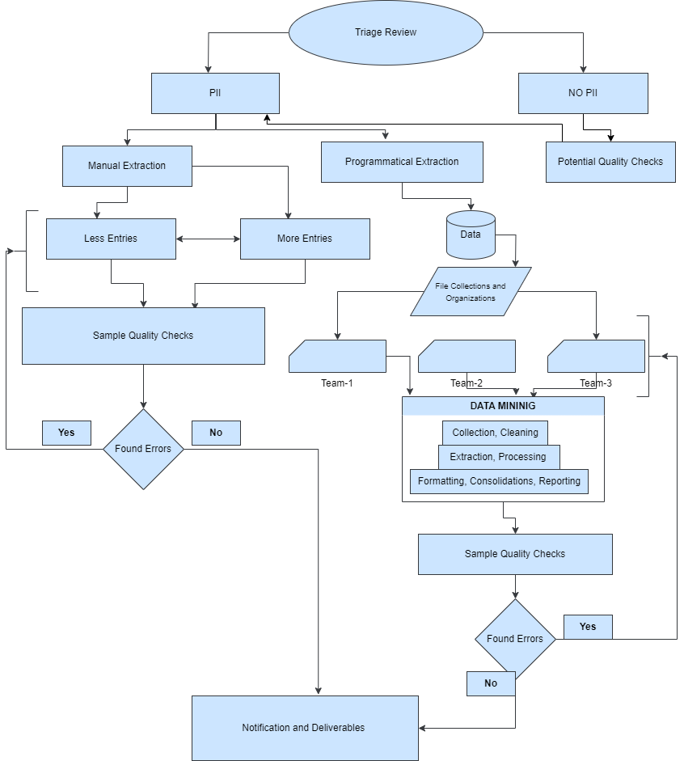
4.4.1 SIPOC
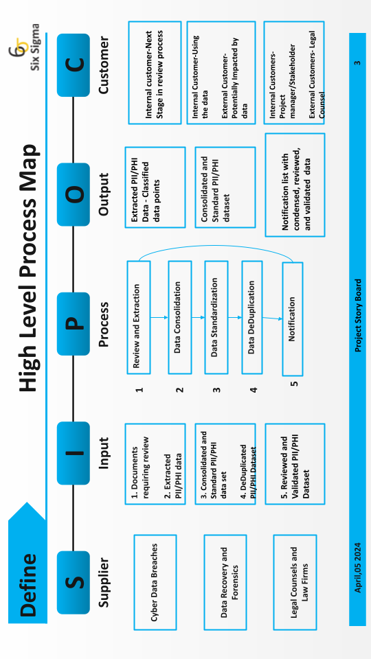
| Process | Input | Output | Customer (Who Benefits) |
|---|---|---|---|
| Initial Review & Data Extraction | - Documents requiring review (various formats) - Predefined PII/PHI identification rules - Review team |
- Extracted PII/PHI data - Classified document - Initial data points |
Internal Customer (Next stage in review process) |
| Data Consolidation & Standardization | - Extracted PII/PHI data from various documents - Data cleaning & formatting rules |
- Consolidated & Standardized PII/PHI dataset | Internal Customer (Next stage in review process) |
| Data Deduplication: Unifying Multiple Instances | - Consolidated & Standardized PII/PHI dataset | - Deduplicated PII/PHI dataset (removing duplicates) | Internal Customer (Next stage in review process) |
| Data Quality Control (QC): Ensuring Accuracy & Completeness | - Deduplicated PII/PHI dataset | - Reviewed & Validated PII/PHI dataset (ensured accuracy & completeness) | Internal Customer (Using the data) & External Customer (Potentially impacted by data) |
| Notification & Action | - Reviewed & Validated PII/PHI dataset | - Notification of completion/issues (to relevant parties) - Documented actions taken |
Internal Customer (Project manager/stakeholders) & External Customer (Legal Counsels, Companies whose data got breached) |
4.5 Project Charter
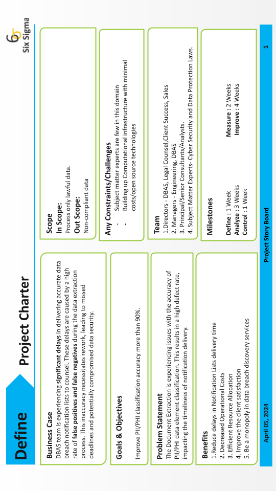
5 DMAIC: Measure
5.1 Data Collection Plan.
Within Data Breach Discovery Services, the following key metrics are captured in the project management tool to assess document review performance.
5.1.1 Metrics:
1.Project Initiation:
Start Date: Capture the date the project was initiated in the project management tool.
2.Document Volume:
Total Number of Documents:Track the total number of documents included in the review process.
3.Personal Identifiable Information (PII) / Protected Health Information (PHI) Detection:
Number of PII/PHI Tagged Documents: Measure the number of documents containing identified PII/PHI data points.
4.Resource Allocation:
Number of Assigned Analysts: Record the number of analysts assigned to the project.
5.Process Cycle Time:
This metric captures the overall time taken for each stage of the review process. Ideally, categorize and track the time taken for each step:
Extraction - Time taken to extract data from documents.
Cleaning & Tidying - Time spent cleaning and formatting extracted data.
Consolidation - Time taken to combine and organize cleaned data.
De-duplication - Time spent removing duplicate data entries.
Quality Control (QC) - Time taken for quality checks on the processed data.
Final Notification Delivery - Time taken to deliver the final report or notification.
6.Error Rate:
Number of False Positives/False Negatives: Track the number of instances where PII/PHI was incorrectly identified (False Positive) or missed (False Negative).
7.Challenge and Inquiry Tracking:
Number of Specific Challenges: Record the number of specific challenges encountered during the review process. Examples could be unclear document formats, data inconsistencies, etc.
Number of Specific Queries: Track the number of specific questions raised by analysts requiring clarification or further guidance.
8.Project Completion:
End Date: Capture the date the document review project was completed in the project management tool.
5.1.2 Glance at Data
df_org = pl.read_csv(
r"/Users/malleshamyamulla/Desktop/SSBBA/MBB_PROJECT/data/DBAS_Projects_Data_Tidy_V3.csv"
).drop(["Started Date", "Complete Date", "NO_OF_DAYS", "NO_OF_SERVICE_WORKING_HRS"]).with_columns(pl.col("Project Name").str.replace_all("PROJECT", "P"))
df_org.columns = [
"Pname",
"#Files",
"#Days",
"#Analyst",
"#PII_PHI",
"#FPS",
"#FNS",
"FPS_FNS",
"TPS_TNS",
"Accuracy",
]
DF_DBAS = df_org.to_pandas()The following two tables present databreach discovery project management information collected from roughly 250 projects handled over the last year.
df_1 = df_org.filter(pl.col('#Files')>100).sample(10).to_pandas()
df_1.iloc[:,:5]| Pname | #Files | #Days | #Analyst | #PII_PHI | |
|---|---|---|---|---|---|
| 0 | P_68 | 141 | 9 | 5 | 122 |
| 1 | P_250 | 5498 | 34 | 15 | 4563 |
| 2 | P_109 | 367 | 44 | 2 | 322 |
| 3 | P_28 | 1103 | 15 | 4 | 948 |
| 4 | P_120 | 1769 | 2 | 3 | 1645 |
| 5 | P_140 | 232 | 5 | 2 | 222 |
| 6 | P_124 | 894 | 7 | 2 | 840 |
| 7 | P_41 | 111 | 1 | 2 | 104 |
| 8 | P_119 | 4766 | 33 | 9 | 4527 |
| 9 | P_228 | 2076 | 5 | 7 | 1764 |
pd.concat([df_1.iloc[:,0],df_1.iloc[:,4:]],axis=1)| Pname | #PII_PHI | #FPS | #FNS | FPS_FNS | TPS_TNS | Accuracy | |
|---|---|---|---|---|---|---|---|
| 0 | P_68 | 122 | 29 | 31 | 60 | 62 | 0.508197 |
| 1 | P_250 | 4563 | 182 | 1688 | 1870 | 2693 | 0.590182 |
| 2 | P_109 | 322 | 41 | 22 | 63 | 259 | 0.804348 |
| 3 | P_28 | 948 | 37 | 199 | 236 | 712 | 0.751055 |
| 4 | P_120 | 1645 | 82 | 411 | 493 | 1152 | 0.700304 |
| 5 | P_140 | 222 | 44 | 44 | 88 | 134 | 0.603604 |
| 6 | P_124 | 840 | 109 | 285 | 394 | 446 | 0.530952 |
| 7 | P_41 | 104 | 7 | 37 | 44 | 60 | 0.576923 |
| 8 | P_119 | 4527 | 1312 | 543 | 1855 | 2672 | 0.590236 |
| 9 | P_228 | 1764 | 317 | 158 | 475 | 1289 | 0.730726 |
This table summarizes the key challenges identified by analysts during the Extraction Phase of the Document Review Service Process. Data was collected through an internal survey.
df_challenges.to_pandas()[['row_nr','#CHALLENGE']].sample(15,replace=False)| row_nr | #CHALLENGE | |
|---|---|---|
| 13 | 13 | working on large volumes files effects |
| 5 | 5 | large file size |
| 12 | 12 | diverse formats |
| 2 | 2 | multiple sheets |
| 0 | 0 | different file structures |
| 9 | 9 | excel documents having different sheet formats |
| 6 | 6 | jumbled data |
| 22 | 22 | taking time for the consolidation process. |
| 24 | 24 | extracting data from large files. |
| 20 | 20 | handling large set data while extracting |
| 19 | 19 | extracting data from multiple sheets is a bit ... |
| 21 | 21 | the files which contains large volumes of data |
| 1 | 1 | unstructured data |
| 11 | 11 | in multiple sheet with jumble data taking lot ... |
| 23 | 23 | time taking when we have too many sheets with ... |
df_PII=pd.read_excel(r'/Users/malleshamyamulla/Desktop/SSBBA/MBB_PROJECT/data/class_pii_phi_tiny_v2.xlsx',sheet_name='PIIPHI')
df_NOPII=pd.read_excel(r'/Users/malleshamyamulla/Desktop/SSBBA/MBB_PROJECT/data/class_pii_phi_tiny_v2.xlsx',sheet_name='NOPIIPHI')The following table showcases a collection of document labels gathered from past projects. We’ve meticulously classified them (PII/PHI OR NO-PII/PHI) for future use in process improvement and automation endeavors.
df_PII| Field_Name | Class_Label | |
|---|---|---|
| 0 | First Name | PII/PHI |
| 1 | Last Name | PII/PHI |
| 2 | PII/PHI | |
| 3 | Gender | PII/PHI |
| 4 | Birthdate | PII/PHI |
| 5 | Social Security Number | PII/PHI |
| 6 | Payment Plan Name | PII/PHI |
| 7 | Payment Plan Details | PII/PHI |
| 8 | patient_name_last | PII/PHI |
| 9 | patient_name_first | PII/PHI |
| 10 | patient_name_middle | PII/PHI |
| 11 | patient_dob | PII/PHI |
| 12 | patient_sex | PII/PHI |
| 13 | patient_addr1 | PII/PHI |
| 14 | patient_addr2 | PII/PHI |
| 15 | patient_city | PII/PHI |
| 16 | patient_state | PII/PHI |
| 17 | patient_zip | PII/PHI |
| 18 | patient_phone | PII/PHI |
| 19 | policyholder_name_last | PII/PHI |
| 20 | policyholder_name_first | PII/PHI |
| 21 | policyholder_name_middle | PII/PHI |
| 22 | policyholder_dob | PII/PHI |
| 23 | policyholder_addr1 | PII/PHI |
| 24 | policyholder_addr2 | PII/PHI |
| 25 | policyholder_city | PII/PHI |
| 26 | policyholder_state | PII/PHI |
| 27 | policyholder_zip | PII/PHI |
| 28 | Parent 1 First Name | PII/PHI |
| 29 | Parent 1 Last Name | PII/PHI |
| 30 | Parent 1 Email | PII/PHI |
| 31 | Parent 1 Mobile Number | PII/PHI |
| 32 | Parent 2 First Name | PII/PHI |
| 33 | Parent 2 Last Name | PII/PHI |
| 34 | Parent 2 Email | PII/PHI |
| 35 | Parent 2 Mobile Number | PII/PHI |
| 36 | Address | PII/PHI |
| 37 | City | PII/PHI |
| 38 | State | PII/PHI |
| 39 | Zip | PII/PHI |
| 40 | Guardian - Full Name | PII/PHI |
| 41 | Guardian - Cell/Main Phone Number | PII/PHI |
| 42 | Guardian - Email Address | PII/PHI |
| 43 | policynumber | PII/PHI |
| 44 | groupnumber | PII/PHI |
| 45 | medicaid_id | PII/PHI |
| 46 | patient_ssn | PII/PHI |
| 47 | claimID | PII/PHI |
| 48 | mrn | PII/PHI |
| 49 | DOB | PII/PHI |
| 50 | ptName | PII/PHI |
| 51 | ptAddress | PII/PHI |
| 52 | ptAddress2 | PII/PHI |
| 53 | insuranceName | PII/PHI |
| 54 | Social Security # | PII/PHI |
df_NOPII| Field_Name | Class_Label | |
|---|---|---|
| 0 | Amount Paid | NO-PII/PHI |
| 1 | chn_payorClass | NO-PII/PHI |
| 2 | chnLocation | NO-PII/PHI |
| 3 | copay | NO-PII/PHI |
| 4 | Discount code | NO-PII/PHI |
| 5 | dos | NO-PII/PHI |
| 6 | GA member role | NO-PII/PHI |
| 7 | GA name | NO-PII/PHI |
| 8 | insurance_VMID | NO-PII/PHI |
| 9 | Membership Expiration Date | NO-PII/PHI |
| 10 | Membership level | NO-PII/PHI |
| 11 | notes | NO-PII/PHI |
| 12 | Opt-in to Newsletter | NO-PII/PHI |
| 13 | Original Role | NO-PII/PHI |
| 14 | Outstanding Balance | NO-PII/PHI |
| 15 | Parent 1 SMS Opt-In | NO-PII/PHI |
| 16 | Parent 2 SMS Opt-In | NO-PII/PHI |
| 17 | pat_relation_to_policyholder | NO-PII/PHI |
| 18 | patient_PCP_VMID | NO-PII/PHI |
| 19 | Payment | NO-PII/PHI |
| 20 | Payment | NO-PII/PHI |
| 21 | Photo | NO-PII/PHI |
| 22 | Registration Date | NO-PII/PHI |
| 23 | Role | NO-PII/PHI |
| 24 | Small Group | NO-PII/PHI |
| 25 | Status | NO-PII/PHI |
| 26 | subscriberNo | NO-PII/PHI |
| 27 | Total Amount | NO-PII/PHI |
| 28 | Waiver Acceptance Date | NO-PII/PHI |
5.2 Establishing Performance Variable.
Building on the previous table, let’s explore the specific information recorded for each project:
Number of Files: This represents the total number of files included in a review pool.
Number of PII/PHI: This indicates how many files within the pool were identified as containing PII/PHI using Named Entity Recognition (NER) analysis.
Number of False Positives (FPS): This reflects the number of documents incorrectly classified as PII/PHI when they actually contained no PII/PHI data.
Number of False Negatives (FNS): This refers to the number of documents that should have been flagged as PII/PHI but were mistakenly classified as not containing such information.
Accuracy Calculation: The accuracy metric is derived by dividing the sum of True Positives and True Negatives by the total number of documents categorized (True Positives, True Negatives, False Positives, and False Negatives).
Document classification accuracy hinges on managing False Positives (FPs) and False Negatives (FNs). By minimizing the rate of both FPs (incorrectly classifying non-PII documents as PII) and FNs (missing true PII documents), we can significantly improve overall accuracy.
This translates to the below key benefits:
Reduced Notification Delays: Fewer FPs mean fewer unnecessary notifications, streamlining the process and ensuring timely alerts for critical PII findings.
Enhanced Analyst Efficiency: With fewer FNs, analysts spend less time investigating irrelevant documents and can focus their expertise on genuine PII cases.
Enhanced Client Satisfaction: By minimizing errors, we deliver high-quality notification lists containing accurate PII/PHI data. This allows clients to confidently present this information to legal counsel, fostering trust and satisfaction.
df_ctq_tbl = pd.read_csv(r'/Users/malleshamyamulla/Desktop/SSBBA/MBB_PROJECT/data/DBAS_CTQ.csv')
df_ctq_tbl| No# | CTQ | Type | Objective | Target | LSL | USL | |
|---|---|---|---|---|---|---|---|
| 0 | 1 | Accuracy | Measurable | Improved | 0.85 | - | 0.95 |
| 1 | 2 | Notification Delay Time | Measurable | Minimized | 1Week | - | <2 Wks. |
5.3 Performance Evaluation-(Stability Analysis).
df_org = (
pl.read_csv(
r"/Users/malleshamyamulla/Desktop/SSBBA/MBB_PROJECT/data/DBAS_Projects_Data_Tidy_V3.csv"
)
.drop(["Started Date", "Complete Date", "NO_OF_SERVICE_WORKING_HRS"])
.with_columns(pl.col("Project Name").str.replace_all("PROJECT", "P"))
).filter(pl.col("accuracy_").is_not_null())
df_org = df_org.to_pandas()
df_dbas_project = df_org.drop("NO_OF_DAYS", axis=1)
df_dbas_project.columns = [
"Pname",
"#Files",
"#Days",
"#Analyst",
"#PII_PHI",
"#FPS",
"#FNS",
"FPS_FNS",
"TPS_TNS",
"_Accuracy",
]
df_dbas_project = df_dbas_project[~df_dbas_project["_Accuracy"].isna()]5.3.1 Checking Process Stability
5.3.1.1 BoxPlot and Histogram on Performance Variable.(Accuracy)
# VIS-1
# Create a figure and subplots
fig, (ax1, ax2) = plt.subplots(1, 2, figsize=(14, 4))
p1 = sns.boxplot(df_dbas_project["_Accuracy"], ax=ax1)
p2 = sns.histplot(df_dbas_project["_Accuracy"], ax=ax2, kde=True)
p1.set_title("BoxPlot: Document Classification Accuracy-Assignable + Random")
p2.set_title("Histogram: Document Classification Accuracy-Assignable + Random")
plt.suptitle("Stability Analysis - Document Classification Accuracy")
plt.tight_layout()
plt.show()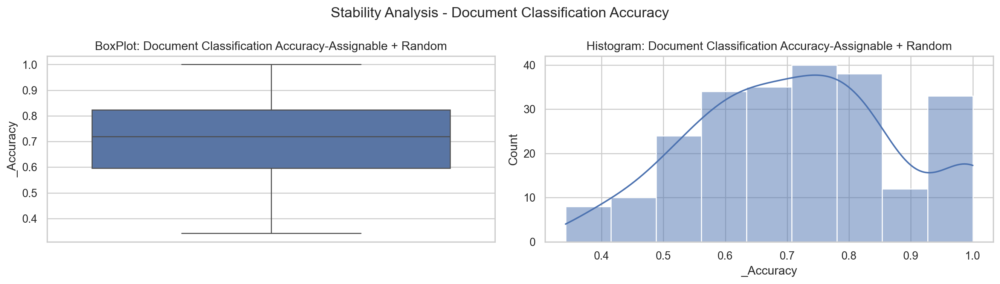
Inference:
The distribution of Accuracy values is approximately normal.
5.3.1.2 Descriptive on Performance Variable.(Accuracy)
pd.DataFrame(df_dbas_project["_Accuracy"].describe()).T.apply(lambda x:round(x,2))| count | mean | std | min | 25% | 50% | 75% | max | |
|---|---|---|---|---|---|---|---|---|
| _Accuracy | 234.0 | 0.72 | 0.17 | 0.34 | 0.6 | 0.72 | 0.82 | 1.0 |
5.3.1.3 Run Chart on Performance Variable.(Accuracy)
create_run_chart(df_dbas_project, "_Accuracy")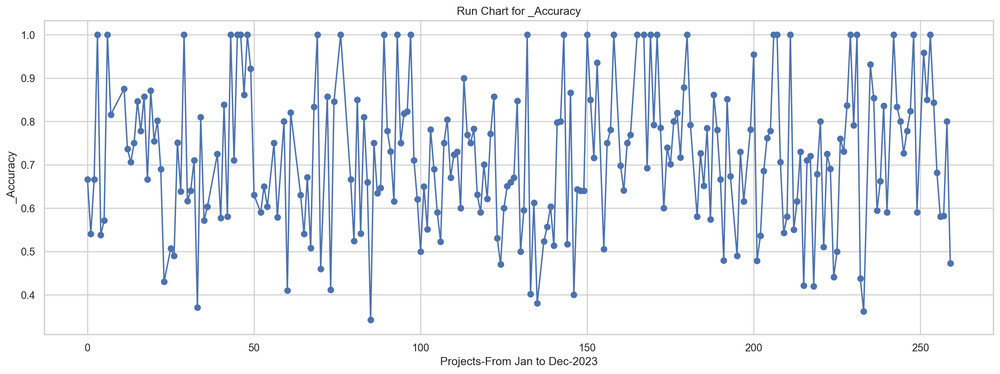
Inference:
Some projects in the Run Chart have a document classification accuracy of 1.0. This might be due to the low volume of documents in these projects (less than 10 files). which will be studied further.
5.3.2 Study on Assignable causes
df_dbas_project_tidy = df_dbas_project[
(df_dbas_project["#Files"] > 10) & (df_dbas_project["#Files"] < 10000)
]Notes:
There are a total of 234 data points.
Out of the 234 data points, 68 are identified as having assignable causes. These projects likely have high accuracy (1.0) due to low document volume (less than 10 files). With a smaller number of documents, it’s generally easier for analysts to achieve perfect accuracy in classification.
We have done an investigation on these 68 data points and tag them as ASSINGNABLE and the remaining are as RANDOM once.
We would now conduct a stability analysis on thes RANDOM chance data points.
# VIS-1
# Create a figure and subplots
fig, (ax1, ax2) = plt.subplots(1, 2, figsize=(14, 4))
p1 = sns.boxplot(df_dbas_project_tidy["_Accuracy"], ax=ax1)
p2 = sns.histplot(df_dbas_project_tidy["_Accuracy"], ax=ax2, kde=True)
p1.set_title("BoxPlot: Document Classification Accuracy- Random Chances Only")
p2.set_title("Histogram: Document Classification Accuracy-Random Chances Only")
plt.suptitle("Stability Analysis - Document Classification Accuracy")
plt.tight_layout()
plt.show()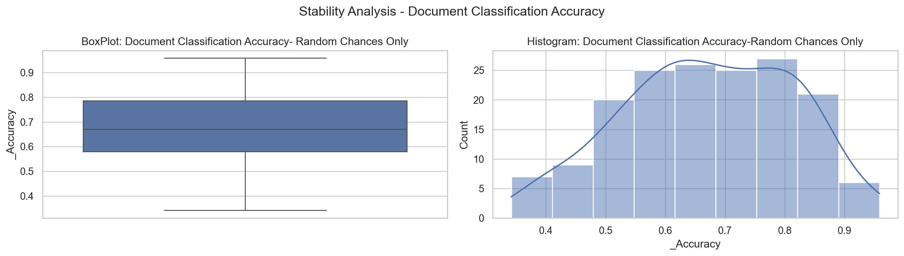
create_run_chart(df_dbas_project_tidy, "_Accuracy")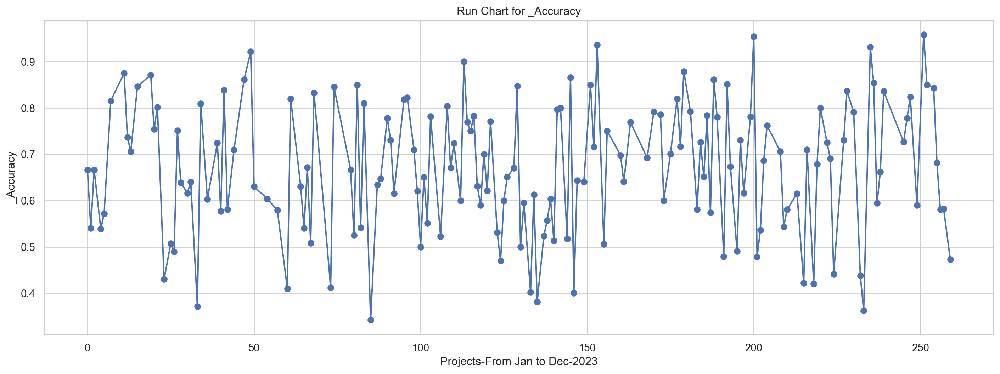
custom_ols_qqplot(df_dbas_project_tidy['_Accuracy'])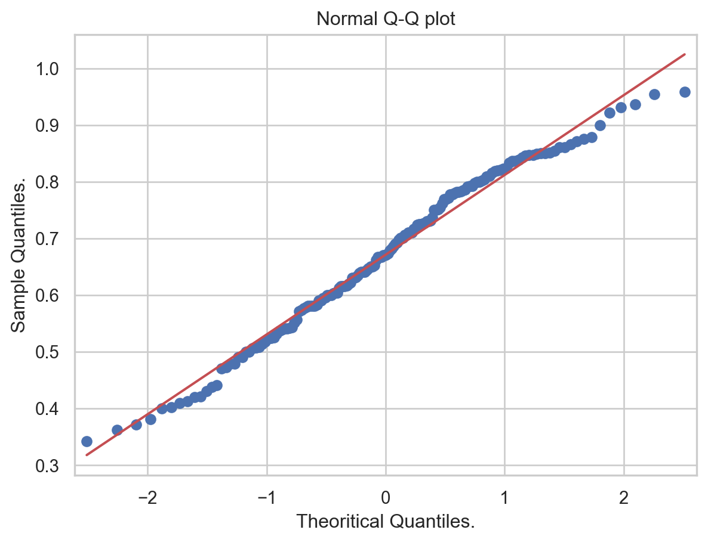
pd.DataFrame(df_dbas_project_tidy["_Accuracy"].describe()).T.apply(lambda x:round(x,2))| count | mean | std | min | 25% | 50% | 75% | max | |
|---|---|---|---|---|---|---|---|---|
| _Accuracy | 166.0 | 0.67 | 0.14 | 0.34 | 0.58 | 0.67 | 0.79 | 0.96 |
Inferences:
Count: There are 166 data points (samples) included in the table.
Mean: The average accuracy across all data points is 0.67.
Standard Deviation (SD): The data has a standard deviation of 0.14. This indicates the data points are somewhat clustered around the mean, but there’s also some variability.
The data likely follows a bell-shaped curve (normal distribution) because the mean is close to the median, and the values are spread out somewhat evenly around the center.
Most of the accuracy values fall between 0.58 and 0.79 (between Q1 and Q3).
There are some outliers on both ends, with a few data points having accuracy as low as 0.34 and as high as 0.96.
Conclusion:
To assess the stability of our document review process, we removed assignable causes such as low document volume projects from the data and re-analyzed the remaining random variations in classification accuracy. This analysis of a statistically stable process will help us identify areas for improvement and ultimately enhance the accuracy of document classification and extraction for future projects.
5.4 Performance Evaluation-(Capability Analysis).
5.4.1 Business Specifications.
| Spec | Value |
|---|---|
| CTQ | Improve Classification Accuracy |
| Mean | 0.67 |
| SD | 0.14 |
| LSL | 0 |
| USL | 0.95 |
5.4.2 Performance Metrics
| Metric | Value |
|---|---|
| Total NonConfirmances | 0.023 |
| Yield | 0.97725 |
| CP | 1.13095 |
| CPk | 0.66667 |
| SigmaLevel | 3.49998 |
| DPMO | 22750.98385 |
Yield (0.98): This indicates a very good performance with a yield.
Capability: CP(Potential) and CPk(Achieved):
These CP(1.13) and CPk(0.67) values are moderate,the CP value (1.3) is greater than 1 indicates the process spread is less than the total specification allowance. This implies the process has the potential to produce accurate results within the given specifications.
CPk is lower than CP which indicates that the process has good potential for accuracy but is not perfectly centered within the desired specification limits.
Sigma Level: The sigma level is significantly at 3.5, indicating a narrower spread of data points around the mean.
DPMO: The Defects Per Million Opportunities (DPMO) is 22750, its reflecting a much lower rate of misclassified documents.
Conclusion
The Document Classification process can achieve the desired results,and there is a chance to improve the process by making it more centered within the specification limits, reducing the risk of producing out-of-specification items.
6 DMAIC: Analyze
6.1 Detailed Process Analysis
6.1.1 Research Questions.
A. Distribution of PII/PHI Documents:
1. What is the spread of PII/PHI documents across projects? (Are there outliers with very high or very low PII/PHI proportions?)
2. Are there different proportions of PII/PHI documents based on project type or other categories?
sns.histplot(DF_SSBB_TIDY["prop_of_pii_phi"])
plt.title('Proportion of PII/PHI Classified Document')
plt.show()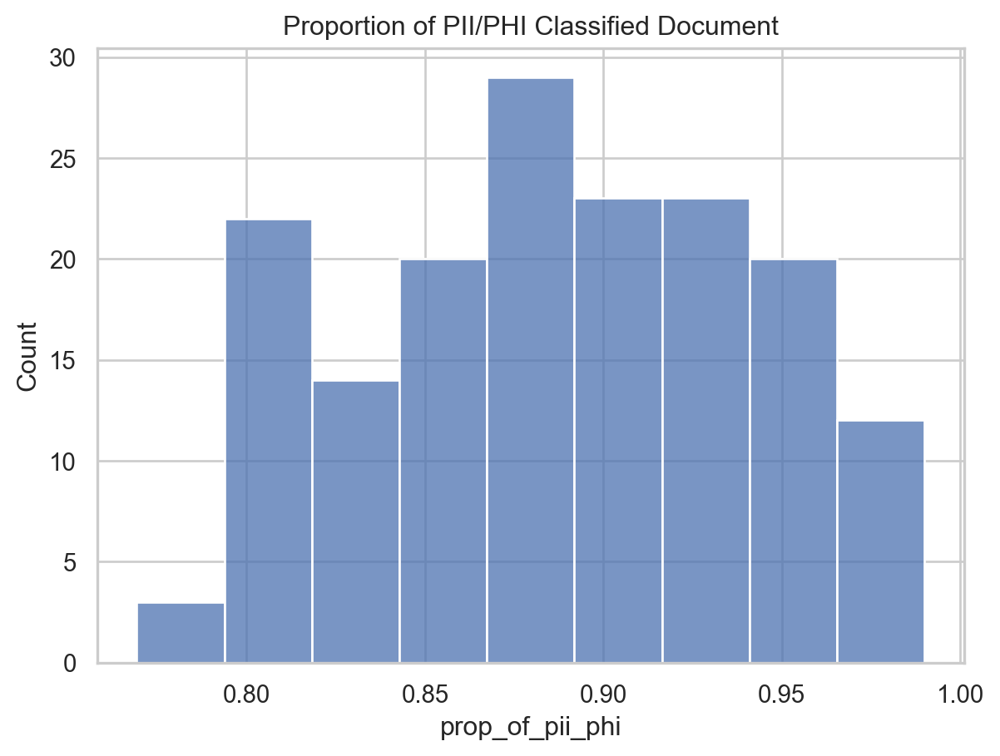
Inferences:
The distribution of PII/PHI documents appears to be relatively normal, centered around a proportion of 0.85. This indicates that most projects have a similar proportion of documents containing PII/PHI.
However, there is also some variation, with proportions ranging from approximately 0.75 to 0.98. This suggests that a few projects may have a significantly higher or lower proportion of PII/PHI documents compared to the average.
B. PII/PHI Files vs. Total Project Files:
3. Is there a correlation between the number of PII/PHI files and the total number of project files?(Are larger projects more likely to have more PII/PHI documents?)
sns.scatterplot(DF_SSBB_TIDY, x="#Files", y="#PII_PHI")
plt.title('Number of Files Vs. Number of PII_PHI classified docs')
plt.show()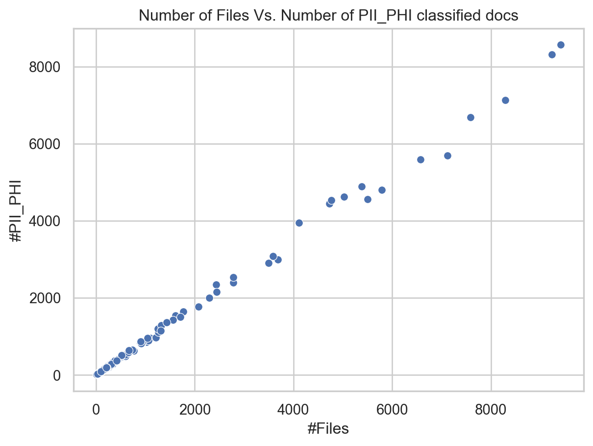
Inferences:
Yes, there appears to be a positive correlation between the number of PII/PHI files and the total number of project files based on the scatter plot. This suggests that projects with a larger number of documents tend to have a higher number of PII/PHI files. However, the scatter plot doesn’t necessarily confirm that projects with fewer documents will have fewer PII/PHI files. There could be outliers or projects with specific characteristics that deviate from this trend.
C. PII/PHI Volume and Notification List Delivery Time:
4. Does the number of PII/PHI documents in a project impact the time it takes to deliver a notification list?
sns.scatterplot(DF_SSBB_TIDY, y="#Days", x="#PII_PHI")
plt.title('Number of PII_PHI classified docs Vs No.of Days')
plt.show()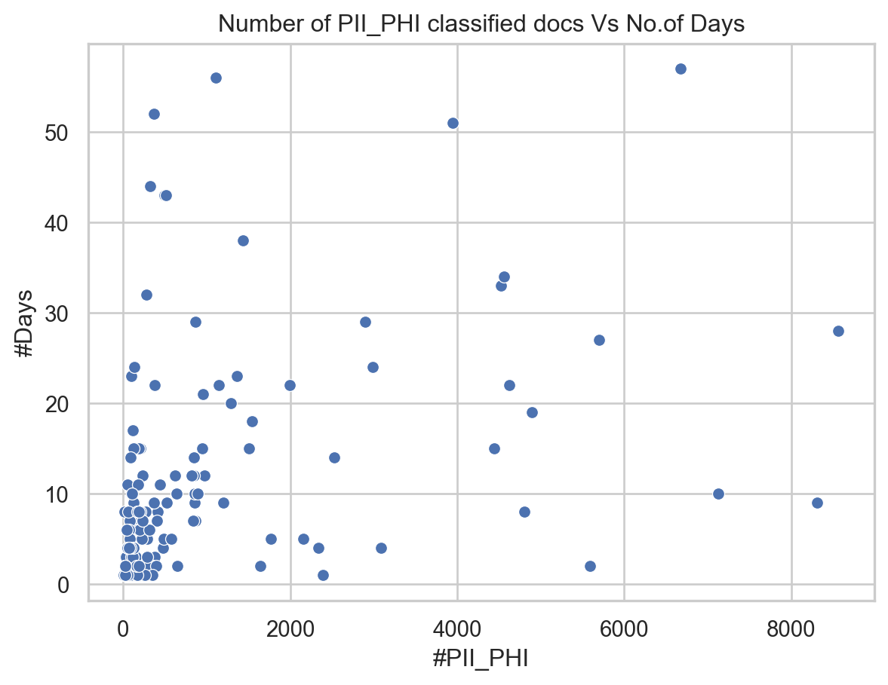
Inferences:
There appears to be a positive correlation between the number of PII/PHI documents in a project and the time it takes to deliver a notification list. This is likely because processing a larger volume of documents naturally takes more time. As seen in the above visualization, projects with 4000, 5000, or 8000 documents tend to have longer processing times.
However, the number of documents isn’t the sole factor. Even smaller projects (below 1000 documents) can experience extended processing times. This could be due to the complexity of the data, such as:
Varied formats: Having documents in different formats (e.g., PDFs, spreadsheets, text files) might require additional steps to convert or extract the data consistently.
Large volumes of observations: Even within a smaller number of documents, a high number of data points (e.g., many rows in a spreadsheet) can extend processing time.
Complex extractions/validations: If the PII/PHI data extraction process is intricate or requires extensive validation to ensure accuracy, it can add to the overall time.
In conclusion, while the number of documents plays a role, the complexity of the data within those documents also significantly impacts notification list delivery time.
D. Analyst Allocation and PII/PHI Volume:
5. How are analysts assigned to projects? (Is there a system based on project complexity or PII/PHI volume?)
6. Do projects with a higher volume of PII/PHI documents have more analysts assigned? (Compare analyst allocation across projects with varying PII/PHI volume)
sns.scatterplot(DF_SSBB_TIDY, y="#Analyst", x="#PII_PHI")
plt.title('Number of PII_PHI classified docs Vs No.of Analysts.')
plt.show()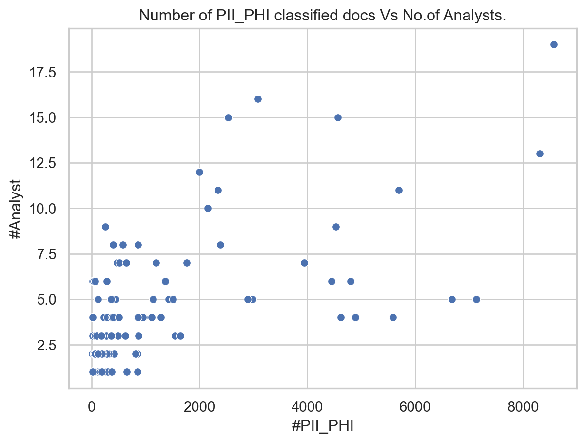
Inferences:
The provided visualization suggests a possible correlation between the number of project documents and the number of analysts assigned. Projects with a larger volume of documents (likely exceeding 2000) tend to have more analysts allocated. This makes sense as it allows analysts to dedicate sufficient time for thorough processing.
However, it’s important to consider that the number of documents might not be the sole factor influencing analyst allocation. Other factors like project complexity or specific PII/PHI content might also play a role.
E. PII Volume and Document Classification Accuracy:
7. Is there a relationship between the number of PII/PHI documents and the accuracy of document classification? (Does a higher volume lead to lower accuracy?)
sns.scatterplot(DF_SSBB_TIDY, y="Accuracy", x="#PII_PHI")
plt.title('Number of PII_PHI classified docs Vs Accuracy')
plt.show()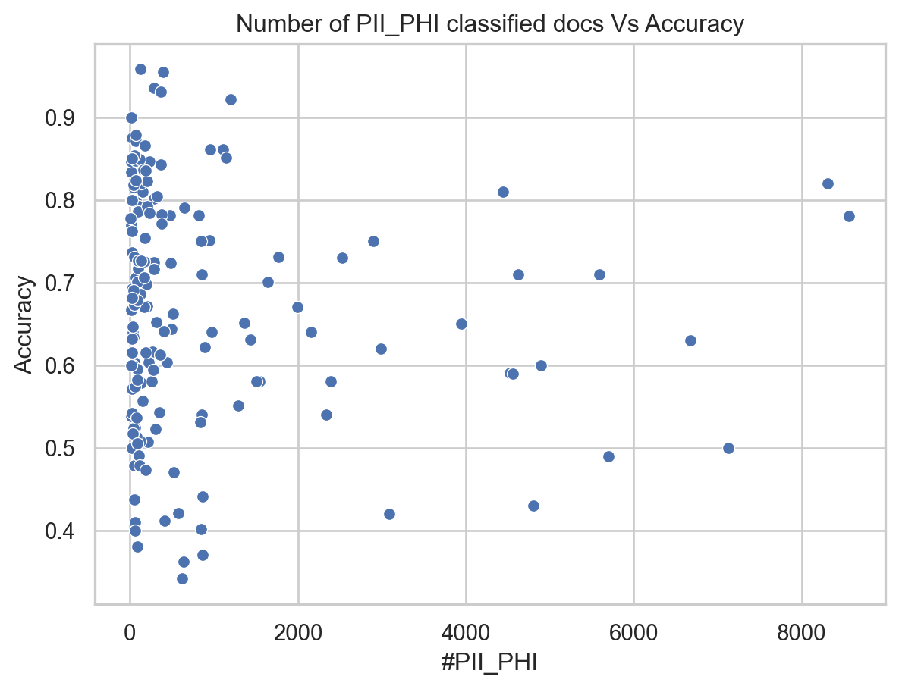
Inferences:
The number of PII/PHI documents may not directly impact document classification accuracy. While a smaller volume of documents can lead to lower accuracy due to limited training data, larger projects can also experience accuracy issues for other reasons. In most cases, large projects haven’t shown a significant decrease in accuracy.
F. Number of Analysts and Classification Accuracy:
8. Does involving more analysts in PII/PHI reviews improve classification accuracy? (Visualize the relationship between analyst count and accuracy)
sns.scatterplot(DF_SSBB_TIDY, y="Accuracy", x="#Analyst")
plt.title('Number of Analysts Vs Accuracy')
plt.show()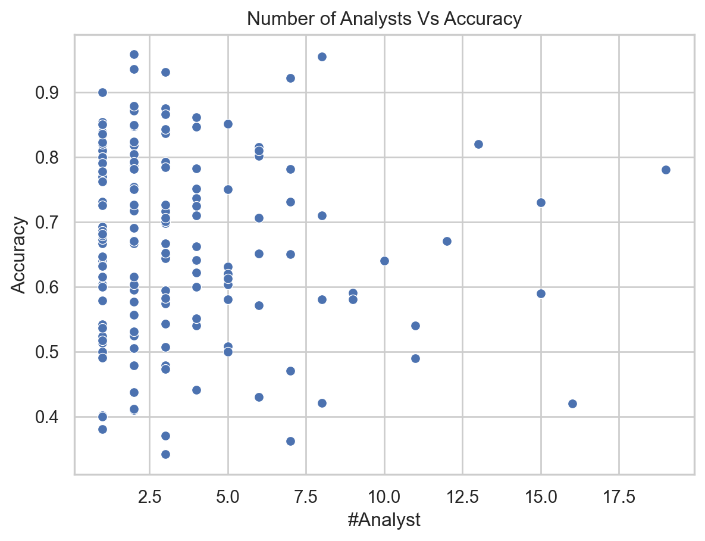
Inferences:
Involving more analysts in PII/PHI reviews may not directly correlate to improved classification accuracy. While a limited number of analysts might lead to lower accuracy due to workload or lack of diverse perspectives, simply adding more analysts isn’t a guaranteed solution. In most cases, the number of analysts on a project hasn’t significantly impacted overall accuracy.
G. False Positives vs. False Negatives:
9. What is the distribution of false positives and false negatives in PII/PHI classification? (Are there more of one type of error?)
sns.countplot(DF_SSBB_TIDY,x="FPS_vs_FNS")
plt.title('Are FalsePostive higher than False Negatives?')
plt.show()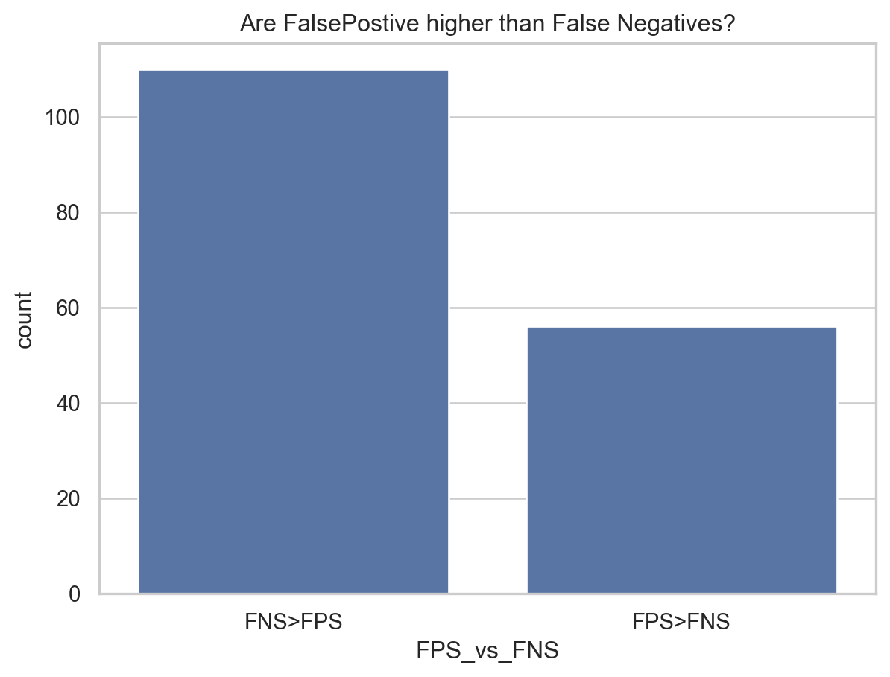
Inferences:
I analyzed the results and categorized them based on whether there were more missed PII/PHI instances (false negatives) or mistakenly identified ones (false positives).
From the visualization, it appears that there are more false negatives than false positives. This means the analysts might be missing more relevant PII/PHI data than incorrectly identifying non-PII/PHI data. However, further statistical analysis is recommended for a more conclusive picture.
H. True vs. False Classifications:
10. How do the volumes of correctly classified documents (true positives) compare to incorrectly classified documents (false positives and negatives)?
sns.countplot(DF_SSBB_TIDY,x="FPFN_vs_TPTN")
plt.title('Are TrueClassifications higher than False Classification?')
plt.show()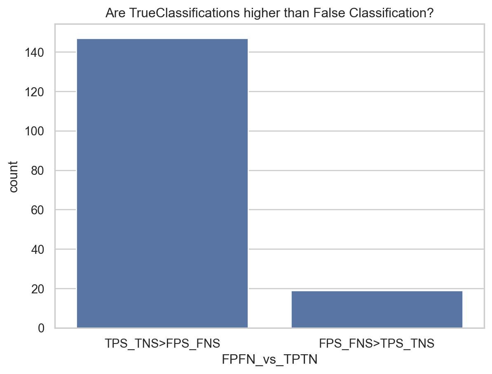
Inferences:
I have categorized the observations into two groups based on the sum:
More correct classifications (True Positives & True Negatives) than incorrect ones (False Positives & False Negatives): This would be labeled as “Correct(TPS_TNS) > Incorrect(FPS_FNS)”.
More incorrect classifications than correct ones: This would be labeled as “Incorrect(FPS_FNS) > Correct(TPS_TNS)”.
Based on this analysis, it appears that there are significantly more correctly classified documents (identified as PII/PHI when they are, and not identified as PII/PHI when they aren’t) compared to documents that are classified incorrectly (mistakenly identified or missed).
I. Project Completion Time:
11. What is the distribution of project completion times (number of weeks)? (Are there outliers with very long or short completion times?)
sns.countplot(
DF_SSBB_TIDY,
x="weeks_bucket",
order=DF_SSBB_TIDY["weeks_bucket"].value_counts().index,
)
plt.title('No of Projects Completed for in each categorized week bucket.')
plt.show()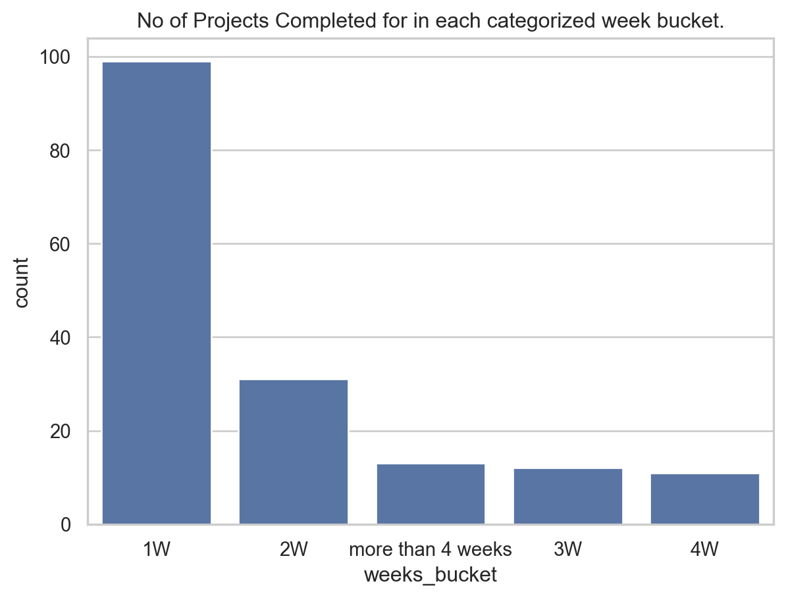
Inferences:
Our analysis shows that the majority of projects (around 80%) are completed within a short timeframe of 2 weeks. This suggests a well-defined and efficient process for these projects.
J. Volume of Classified PII/PHI Documents:
12. What is the total volume of PII/PHI documents that have been classified? (This provides a general sense of workload)
sns.countplot(
DF_SSBB_TIDY,
x="pii_phi_bucket",
order=DF_SSBB_TIDY["pii_phi_bucket"].value_counts().index,
)
plt.title('No of PII/PHI Classified Buckets')
plt.show()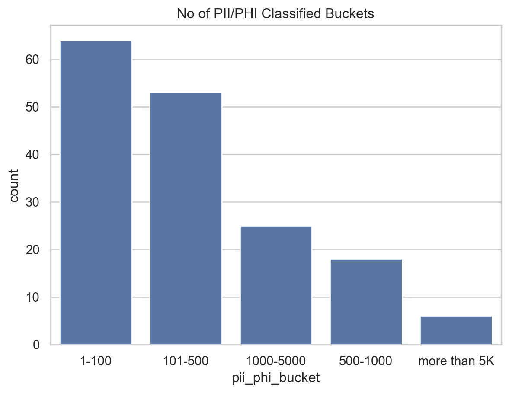
Inferences:
We’ve classified a high volume of PII/PHI documents - approximately 95% fall within a range of up to 5,000 documents. This gives us a good idea of the overall workload involved in the PII/PHI classification process.
6.1.2 Statistical Test/Inferences on Research Questions.
A.Hypothesis #1.
Null Hypothesis(H0):The average Accuracy of PII/PHI document classification is 0.67.
Alternate Hypothesis(HA):The average Accuracy of PII/PHI document classification is not equal to 0.67
| Parameters | Value |
|---|---|
| t-statistic | 0.09 |
| p-value | 0.92 |
| CI at 95% | (0.64,0.69) |
Inferences:
One sample T-test is carried out to test this hypothesis, here p-value(0.92) suggest that we failed to reject the null hypothesis. The data doesn’t provide strong enough evidence to say the average accuracy is definitively different from 0.67.
And the lower t-statistic(0.09) also indicates that the observed average accuracy is very close to the hypothesized value (0.67).
B.Hypothesis #2.
Null Hypothesis(H0):The average Proportion of PII/PHI documents is 0.8.
Alternate Hypothesis(HA):The average Proportion of PII/PHI documents is more than 0.8
| Parameters | Value |
|---|---|
| t-statistic | 21.01 |
| p-value | 0.0 |
| CI at 95% | (0.88,-) |
Inferences:
One Sample t-test (right tailed) test is carried out to see if the average proportion of PII/PHI documents is more than 0.8 or not, the p-value(0.0) suggest that we can reject the null hypothesis in favor of alternate, and the data provides strong evidence to suggest that the average proportion of PII/PHI documents is significantly higher than the initially assumed value of 0.8.
C.Hypothesis #3.
Null Hypothesis(H0):The average accuracy for FNS>FPS is equal to the average accuracy for FPS>FNS (there’s no difference).
Alternate Hypothesis(HA):The average accuracy for FNS>FPS is different from the average accuracy for FPS>FNS.
| Parameters | Value |
|---|---|
| t-statistic | -4.64 |
| p-value | 0.0 |
Inferences:
I have conducted a two-sample t-test to compare the accuracy between these two scenarios. The resulting p-value of 0.0 indicates a statistically significant difference. The data strongly suggests that the average accuracy for FNS>FPS scenarios is not the same as the average accuracy for FPS>FNS scenarios. There’s a difference in how well the classification performs depending on whether there are more missed PII/PHI instances or more incorrectly identified ones.
D.Hypothesis #4.
Null Hypothesis(H0):There is NO difference between the average accuracy of TPS_TNS>FPS_FNS and FPS_FNS>TPS_TNS in classfication
Alternate Hypothesis(HA):There is a difference between the accuracy of TPS_TNS>FPS_FNS and FPS_FNS>TPS_TNS in classfication
| Parameters | Value |
|---|---|
| t-statistic | 10.22 |
| p-value | 0.0 |
Inferences:
I have conducted a two-sample t-test to compare the accuracy between these two scenarios. The resulting p-value of 0.0 indicates a statistically significant difference. The data strongly suggests that the average accuracy for TPS_TNS>FPS_FNS scenarios is not the same as the average accuracy for FPS_FNS>TPS_TNS scenarios. There’s a difference in how well the classification performs depending on whether there are more missed PII/PHI instances or more incorrectly identified ones.
E.Hypothesis #5.
Null Hypothesis(H0):The true proportion of classifications with FNS>FPS is 0.6
Alternate Hypothesis(HA):The true proportion of classifications with FNS>FPS is not equal to 0.6
| Parameters | Value |
|---|---|
| Z-statistic | 0.06 |
| p-value | 0.94 |
Inferences:
I have a one-proportion z-test to analyze the data. The resulting p-value of 0.94 indicates that we fail to reject the null hypothesis, bbased on the data, we don’t have strong evidence to say the true proportion of FNS>FPS classifications is definitively different from 0.6.
F. Hypothesis #6.
Null Hypothesis(H0):The proportion of False Positives (FPS) compared to False Negatives (FNS) is the same across both categories: documents with more False Positives & False Negatives (FPFN) and documents with more True Positives & True Negatives (TPTN).
Alternate Hypothesis(HA):The proportion of FPS compared to FNS is not the same across the two categories (FPFN vs. TPTN).
sns.countplot(DF_SSBB_TIDY,x="FPFN_vs_TPTN",hue="FPS_vs_FNS")
plt.show()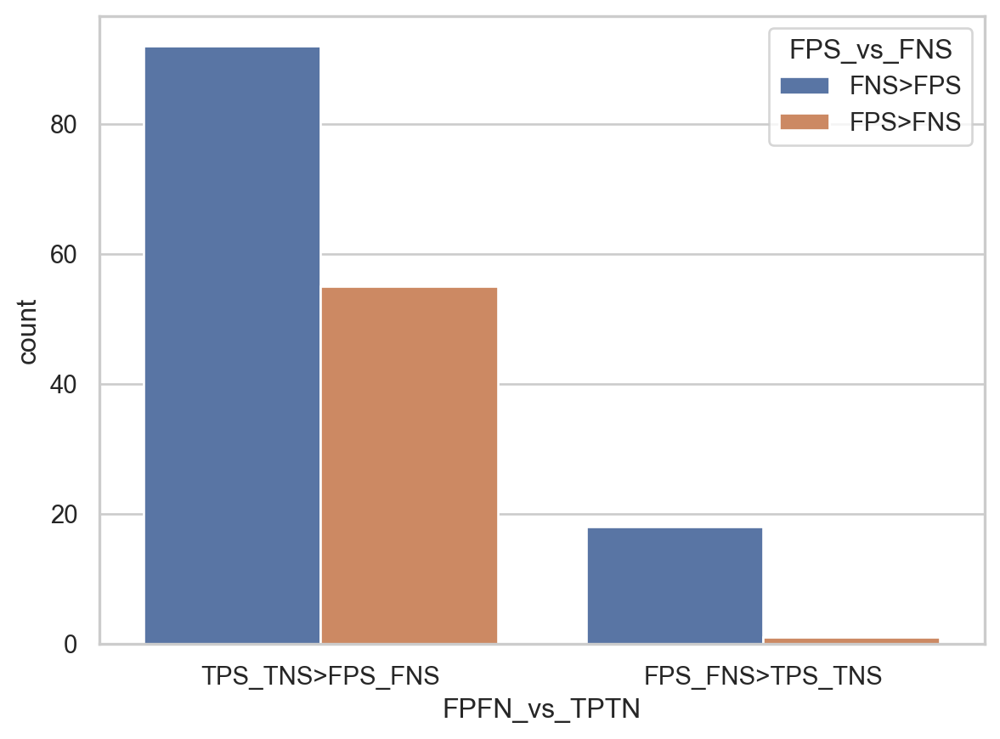
| Parameters | Value |
|---|---|
| Z-statistic | 8.62 |
| p-value | 0.00 |
Inferences:
The Two-Sample Z-test was conducted to compare the proportion of False Positives (FPS) vs. False Negatives (FNS) across two categories: documents with more False Positives & False Negatives (FPFN) and documents with more True Positives & True Negatives (TPTN).
The resulting p-value of 0.0 suggests a statistically significant difference between the two categories. In other words, the proportion of FPS compared to FNS is not the same for documents with high FPFN vs. documents with high TPTN.
G.Hypothesis #7.
Null Hypothesis(H0): There is no association between the number of PII/PHI category buckets a project belongs to and its finishing time in weeks. In other words, project finishing time is the same across all PII/PHI category buckets. Alternate Hypothesis(HA): There is an association between the number of PII/PHI category buckets and project finishing time. This means projects with different numbers of PII/PHI categories might have different average finishing times in weeks.
sns.countplot(
DF_SSBB_TIDY[
(DF_SSBB_TIDY["pii_phi_bucket"] != "more than 5K")
& (DF_SSBB_TIDY["weeks_bucket"] != "more than 4 weeks")
& (DF_SSBB_TIDY["weeks_bucket"] != "4W")
],
x="pii_phi_bucket",
hue="weeks_bucket",
)
plt.show()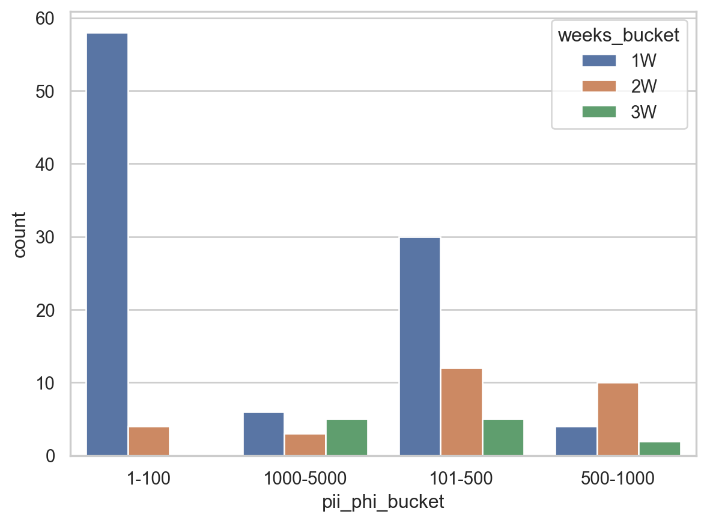
| Parameters | Value |
|---|---|
| ChiSquare | 83.62 |
| p-value | 0.00 |
Inferences:
The Chi-Square test was conducted to investigate a possible association between the number of PII/PHI category buckets in a project and its finishing time (weeks).
The results show a statistically significant p-value (0.0), which allows us to reject the null hypothesis.it means there’s evidence of a relationship between the number of PII/PHI categories and project finishing time. Projects with different numbers of PII/PHI categories might, on average, take different amounts of time to complete in weeks.
H.Hypothesis #8.
Null Hypothesis(H0):On average, the Classification accuracy of a project isn’t affected by its the size of PII/PHI volumes
Alternate Hypothesis(HA):On average, the Classification accuracy of a project is affected by its the size of PII/PHI volumes
sns.boxplot(x='pii_phi_bucket',y='Accuracy',data=DF_SSBB_TIDY)
plt.show()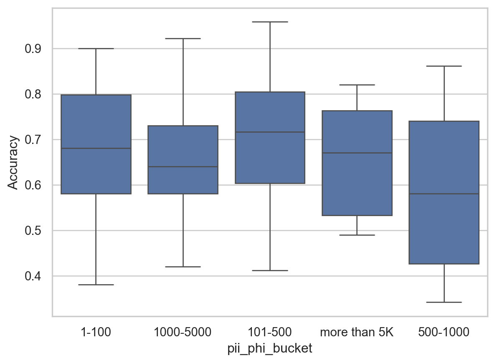
# Define the model formula
df_3g_model = ols(
"Accuracy ~ pii_phi_bucket", data=DF_SSBB_TIDY
).fit()
# Perform ANOVA
anova_table_3g = anova_lm(df_3g_model)anova_table_3g.apply(lambda x:round(x,5))| df | sum_sq | mean_sq | F | PR(>F) | |
|---|---|---|---|---|---|
| pii_phi_bucket | 4.0 | 0.21050 | 0.05262 | 2.75543 | 0.02982 |
| Residual | 161.0 | 3.07482 | 0.01910 | NaN | NaN |
Inferences:
I have conducted a one-way ANOVA test to investigate the relationship between the volume of PII/PHI documents in a project and its average classification accuracy.
The resulting p-value of 0.02 suggests a statistically significant difference. This means we can reject the null hypothesis. In simpler terms, the data indicates that the size of PII/PHI volumes does, on average, affect the classification accuracy of projects.
| Conclusions |
From the above statistical tests result we can conclude that these results provide valuable insights for improving PII/PHI classification.
The average accuracy might be hovering around 0.67, but there’s room for improvement.
There’s a higher proportion of PII/PHI documents than initially expected.
The classification performs differently depending on the type of error (missed vs. incorrect PII/PHI).
The proportion of errors (False Positives vs. False Negatives) also varies based on document characteristics.
Project size (PII/PHI volume) can impact classification accuracy.
6.1.3 Study on Root Causes using text mining techniques.
Based on an internal survey, we analyzed feedback from our team of analysts regarding the challenges they face during manual PII/PHI extraction from various files.
Here’s a breakdown of the key themes showed in the wordcloud maps.
6.1.3.1 Actions.
_generate_word_cloud(text_verb) 
1.Extract: This is the most prominent action analysts struggle with. They likely encounter difficulties in efficiently extracting the desired PII/PHI data from the files.
2.Manage: This suggests analysts may have trouble managing large volumes of files or complex data structures while performing extractions.
3.Handle: This indicates potential challenges in handling diverse file formats or unstructured data that requires additional processing.
6.1.3.2 Nouns.
_generate_word_cloud(text_noun) 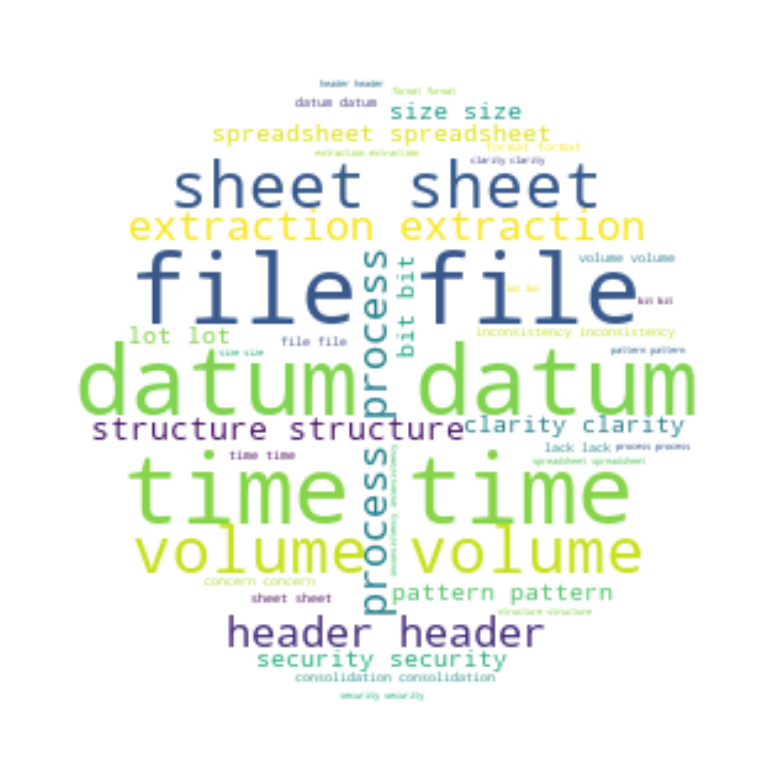
1.Data: This is the core focus of their work, with analysts primarily dealing with PII/PHI data.
2.Files: The feedback indicates that the analysts process a significant number of files containing the PII/PHI.
3.Sheets: This could refer to spreadsheets within the files or separate sheets containing the PII/PHI data. Analysts might be struggling with extracting data from multiple sheets or inconsistent sheet formats.
6.1.3.3 Adjectives.
_generate_word_cloud(text_adj) 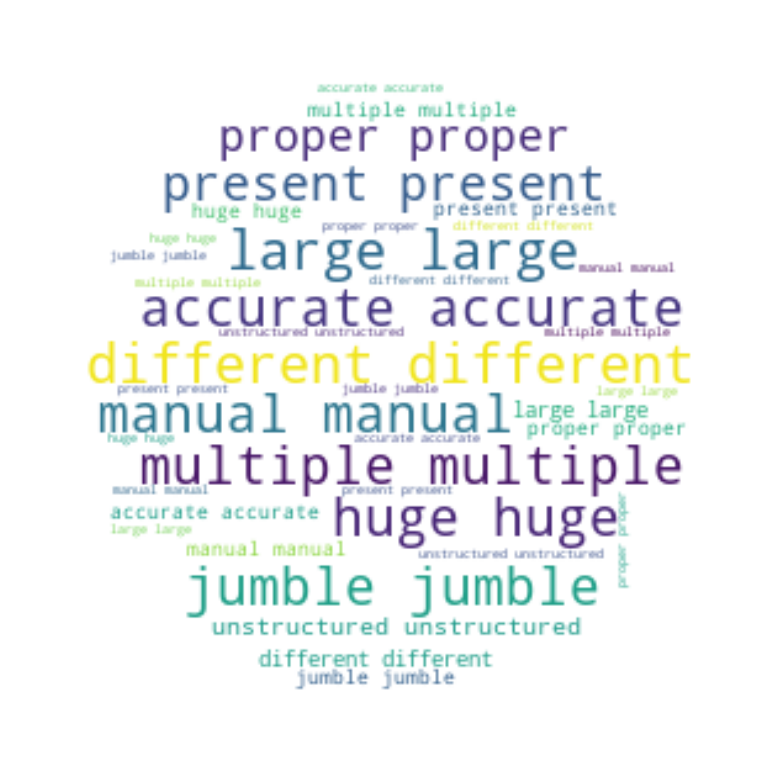
1.Large: The volume of data or number of files may be overwhelming, making manual extraction time-consuming.
2.Unstructured: The data format might not be organized in a way that’s easily digestible for automated extraction, requiring manual intervention.
3.Different/Diverse: This suggests analysts encounter various file formats or data structures, making consistent extraction challenging.
4.Accurate: Accuracy is likely a major concern, as ensuring they capture the correct PII/PHI is crucial.
Overall, the feedback highlights the analyst’s struggle with the volume, format, and complexity of data when manually extracting PII/PHI. This information can help us identify solutions for streamlining the extraction process and improving their efficiency.
6.1.4 FMEA
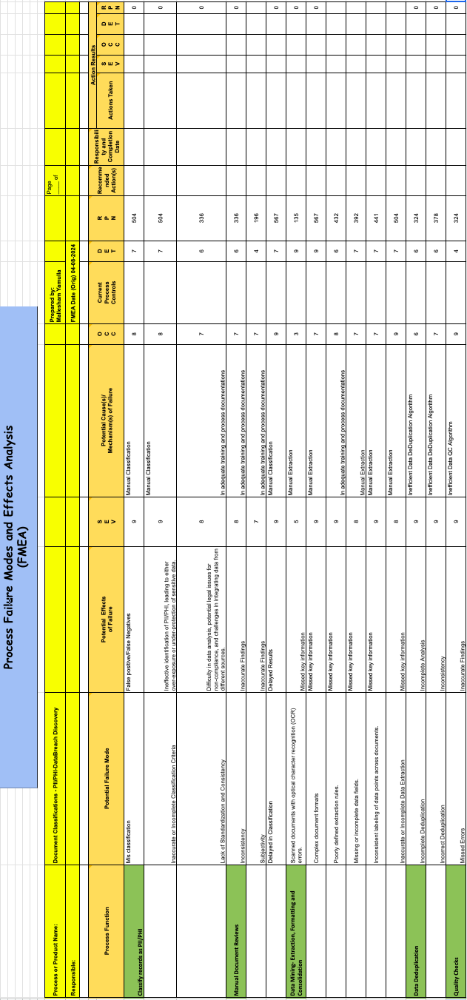
6.1.5 Pareto Analysis
Let’s identify the biggest contributors to low document classification accuracy.
We can use Pareto analysis, a technique that helps prioritize tasks based on their impact. It follows the 80/20 rule, where a small percentage (often 20%) of causes contribute to a large percentage (often 80%) of the effect.
Here are the potential causes for lower accuracy:
- Manual Extraction of data
- Manual Classification of documents
- Inadequate training and process documentation
- Inefficient Data De-duplication Algorithm
- Inefficient Data Quality Control Algorithm
By plotting these causes on a Pareto chart, we can see which ones have the biggest impact on accuracy.
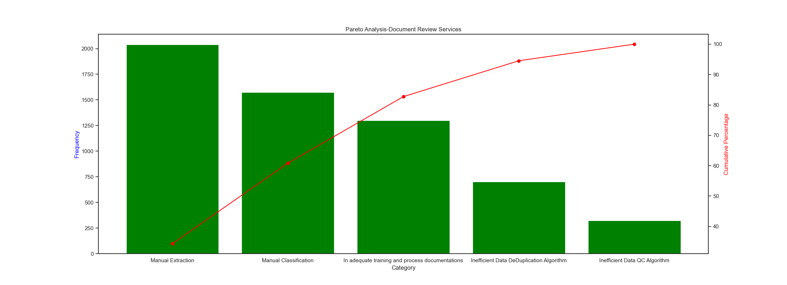
Looking at the Pareto chart, we can see that manual tasks (including Classification and Extraction) contribute the most (60%) to the low accuracy. Lack of proper training materials and process documentation (20%) is another significant factor.
6.1.6 Summary: Potential Variation Sources(Root Causes)
| S.NO | RootCause | |
|---|---|---|
| 1 | Manual tasks (including Classification and Extraction) | |
| 2 | Struggle with volume, format, and complexity of data when manually extracting PII/PHI. | |
| 3 | Lack of proper training materials and process documentation |
7 DMAIC: Improve
7.1 Discover Variable Relationships
In the improvement phase of Six Sigma, we’re investigating automation opportunities for document classification and extraction tasks, which are currently handled manually.
We have data from past projects that holds valuable insights. This data includes the fields extracted from each document and the assigned classification labels. Notably, a team of analysts meticulously identified the header information and its corresponding labels.
By leveraging this labeled data, we can build a powerful classification model. This model will automate the process of classifying headers within future project files, significantly reducing manual effort and improving efficiency.
To gain insights into the data we’ll use for building the predictive model, we’ll perform some initial explorations:
Analyze header field text lengths to understand their distribution.
Investigate the number of words within each header.
Explore word frequencies and usage patterns within the headers.
Examine the class proportions for PII/PHI and Non-PII/PHI labels.
The data in this table is a representative sample that will be used to build the predictive model.
df_pii_phi_raw[ (df_pii_phi_raw["tidy_field_len"]<10) ].sample(10)| _dbas_field_name | class_label | _dbas_field_name_tidy | tidy_field_len | no_of_words | |
|---|---|---|---|---|---|
| 5088 | New_Pt | 1 | new pt | 6 | 2 |
| 4317 | CIN | 0 | cin | 3 | 1 |
| 8921 | EarnTot03 | 0 | earntot03 | 9 | 1 |
| 5480 | Pt_name | 1 | pt name | 7 | 2 |
| 1935 | MD(2) | 0 | md 2 | 4 | 2 |
| 11279 | PayeeSup | 0 | payeesup | 8 | 1 |
| 6001 | avg_hours_ | 0 | avg hours | 9 | 2 |
| 9488 | Field176 | 0 | field176 | 8 | 1 |
| 1124 | ECCRMANum | 0 | eccrmanum | 9 | 1 |
| 8294 | CR_2010 | 0 | cr 2010 | 7 | 2 |
Here is the data dictionary.
dbas_field_name (Original Header): This field stores the raw header text extracted from the project file. It might contain inconsistencies or extraneous characters.
class_label (PII/PHI Classification): This field indicates whether the header likely contains Personally Identifiable Information (PII) or Protected Health Information (PHI). The value is binary:
- 1: Represents a header containing PII/PHI (sensitive data).
- 0: Represents a header containing Non-PII/PHI (non-sensitive data).dbas_field_name_tidy (Cleaned Header): This field is a cleaned version of the original header (dbas_field_name). It has undergone processing to remove unwanted characters, formatting inconsistencies, or extra spaces. This cleaned header is used for further analysis and model training.
tidy_field_len (Clean Header Length): This field represents the number of characters in the cleaned header (dbas_field_name_tidy). It reflects the length of the header after any unnecessary characters or spaces are removed during the cleaning process.
no_of_words (Number of Words): This field indicates the number of words present in the cleaned header (dbas_field_name_tidy). It provides insights into the overall complexity of the header and can be useful for feature engineering in the model building process.
# Create a figure and subplots
fig, (ax1, ax2) = plt.subplots(1, 2, figsize=(14, 4))
p1 = sns.histplot(df_pii_phi_raw["tidy_field_len"],ax=ax1)
p2 = sns.boxplot(df_pii_phi_raw["tidy_field_len"],ax=ax2)
p2.set_title("BoxPlot")
p1.set_title("Histogram")
plt.suptitle("Header Field Text Length Distribution")
plt.tight_layout()
plt.show()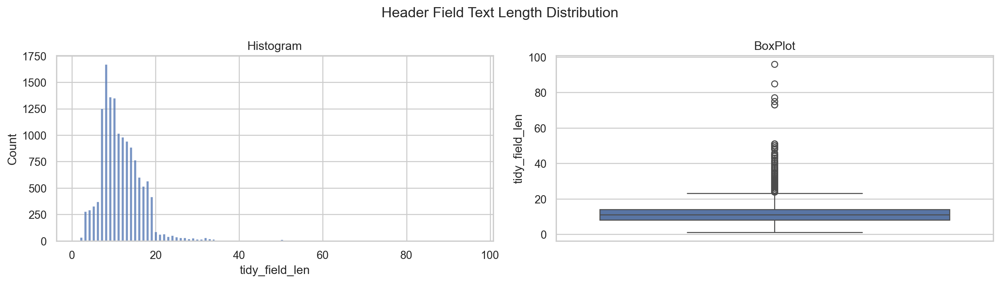
Our initial exploration focused on the distribution of text lengths within the header fields. Visualizations like box plots and histograms above revealed that:
80% of the headers fall within a length range of 2 to 20 characters. This suggests a prevalence of relatively concise headers.
The remaining 20% of headers exhibit lengths exceeding 20 characters. These longer headers warrant further investigation.
To understand the potential sensitivity of information within these longer headers, we’ll delve deeper. We’ll examine whether there’s a correlation between header length and the presence of PII/PHI and this analysis will help us determine if longer headers are more likely to contain sensitive data.
pd.DataFrame(df_pii_phi_raw[df_pii_phi_raw["tidy_field_len"] > 20]["class_label"].value_counts()).reset_index()| class_label | count | |
|---|---|---|
| 0 | 1 | 309 |
| 1 | 0 | 175 |
sns.boxplot(x='class_label',y='tidy_field_len',data=df_pii_phi_raw)
plt.title("Text length per each of classification label PII/PHI and NO-PII/PHI")
plt.show()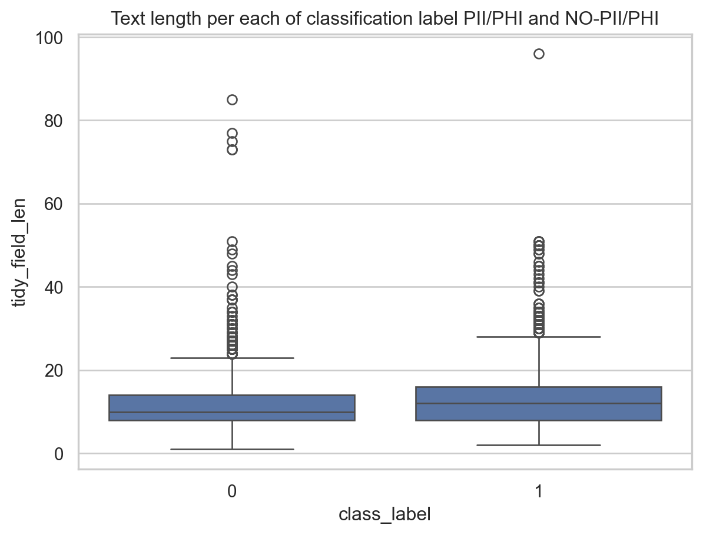
Our analysis of the data revealed that 484 observations have a text length exceeding 20 characters. Among these longer headers:
65% contain PII/PHI (Personally Identifiable Information/Protected Health Information). This indicates a significant presence of sensitive data within these headers.
The remaining 35% do not contain any PII/PHI content.
We would proceed with next steps as below:
Retain the 65% of headers containing PII/PHI: These headers are valuable for training our model to identify sensitive information.
Further investigate the non-PII/PHI headers (35%): We can explore these headers to understand why they were classified as non-sensitive despite their length. This might involve manually reviewing a sample or applying additional criteria to refine the classification.
Decision on Non-PII/PHI headers: Based on the investigation, we can determine whether to keep these headers in the training data or remove them. Factors to consider might include their informativeness for the model and potential redundancy.
df_pii_phi_tidy = pd.concat(
[
df_pii_phi_raw[df_pii_phi_raw["tidy_field_len"] <= 20],
df_pii_phi_raw[
(
(df_pii_phi_raw["tidy_field_len"] > 20)
& (df_pii_phi_raw["tidy_field_len"] < 50)
)
& (df_pii_phi_raw["class_label"] == 1)
],
]
)# Create a figure and subplots
fig, (ax1, ax2) = plt.subplots(1, 2, figsize=(14, 4))
p1 = sns.histplot(df_pii_phi_tidy["tidy_field_len"],ax=ax1)
p2 = sns.boxplot(df_pii_phi_tidy["tidy_field_len"],ax=ax2)
p2.set_title("BoxPlot:After removing the assignable causes")
p1.set_title("Histogram:After removing the assignable causes")
plt.suptitle("Header Field Text Length Distribution-Tidy Format")
plt.tight_layout()
plt.show()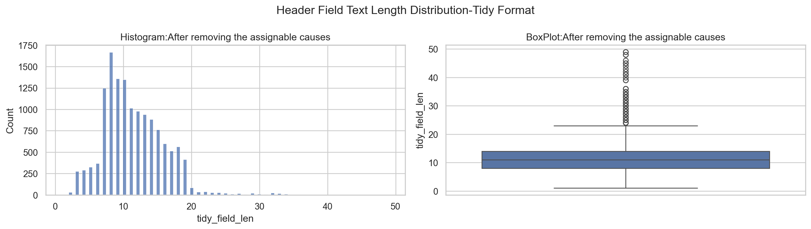
Removing assignable causes from the non-PII/PHI text has resulted in a desirable and stable text length distribution. This suggests that the original length variations were likely due to these assignable causes. The cleaned text lengths are now more consistent and suitable for further analysis or model training.
plt.style.use('classic')
df_no_of_words = df_pii_phi_tidy["no_of_words"].value_counts().reset_index()
# sns.barplot(df_no_of_words, x="no_of_words", y="count")
# plt.title("Number of Words Distribution")
# plt.show()
# Pareto Diagram
sorted_data = df_no_of_words.sort_values(by=["count"], ascending=False)
sorted_data["cumulative_freq"] = sorted_data["count"].cumsum()
sorted_data["cumulative_pct"] = (
sorted_data["cumulative_freq"] / sorted_data["count"].sum() * 100
)
# Visualizations
fig, ax1 = plt.subplots(figsize=(22, 8))
ax2 = ax1.twinx()
ax1.bar(sorted_data["no_of_words"], sorted_data["count"], color="blue")
ax2.plot(
sorted_data["no_of_words"],
sorted_data["cumulative_pct"],
color="red",
marker="o",
linestyle="--",
)
ax1.set_xlabel("Category")
ax1.set_ylabel("Frequency", color="green")
ax2.set_ylabel("Cumulative Percentage", color="red")
plt.title("Pareto Analysis-No of Words")
plt.show()
sns.set_theme("notebook", style="whitegrid")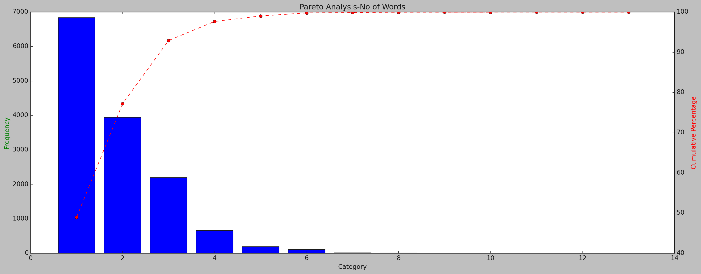
Inferences
Our Pareto analysis revealed as,
80% of observations have headers containing only one or two words.
97% of observations have headers with one to four words.
Implications for Text-to-Numerical Conversion: These findings suggest that unigrams (single words) and bigrams (two-word phrases) might be sufficient for capturing most of the information within the headers when converting text to numerical features for our model. While trigrams (three-word phrases) could be explored, the high prevalence of shorter phrases suggests that unigrams and bigrams might be a good starting point to balance model complexity and performance.
The below two tables shows the header text of PII and NO-PII/PHI classes separately.
df_pii_phi_tidy[(df_pii_phi_tidy["class_label"] == 0) & (df_pii_phi_tidy["tidy_field_len"]<10)].sample(10)| _dbas_field_name | class_label | _dbas_field_name_tidy | tidy_field_len | no_of_words | |
|---|---|---|---|---|---|
| 8350 | CUR SAL | 0 | cur sal | 7 | 2 |
| 14095 | YOB_1984 | 0 | yob 1984 | 8 | 2 |
| 4274 | Tier | 0 | tier | 4 | 1 |
| 10321 | JandSPerc | 0 | jandsperc | 9 | 1 |
| 7423 | asofdate | 0 | asofdate | 8 | 1 |
| 13772 | vac hrs | 0 | vac hrs | 7 | 2 |
| 13473 | TotalHrs?? | 0 | totalhrs | 8 | 1 |
| 4142 | WILLIAM | 0 | william | 7 | 1 |
| 4271 | tDob | 0 | tdob | 4 | 1 |
| 1457 | hicn | 0 | hicn | 4 | 1 |
df_pii_phi_tidy[(df_pii_phi_tidy["class_label"] == 1) & (df_pii_phi_tidy["tidy_field_len"]<10)].sample(10)| _dbas_field_name | class_label | _dbas_field_name_tidy | tidy_field_len | no_of_words | |
|---|---|---|---|---|---|
| 1272 | FFZip | 1 | ffzip | 5 | 1 |
| 6790 | ss | 1 | ss | 2 | 1 |
| 4538 | Address | 1 | address | 7 | 1 |
| 8742 | DOBa17 | 1 | doba17 | 6 | 1 |
| 5849 | addr2 | 1 | addr2 | 5 | 1 |
| 12983 | SS# | 1 | ss | 2 | 1 |
| 5534 | zipcode | 1 | zipcode | 7 | 1 |
| 2373 | PayBTCity | 1 | paybtcity | 9 | 1 |
| 11140 | P_ID# | 1 | p id | 4 | 2 |
| 6229 | city_ | 1 | city | 4 | 1 |
In order to understand the significance of words within each document and their distinctiveness across all documents, we’ll utilize TF-IDF.
TF-IDF stands for Term Frequency-Inverse Document Frequency. It’s a way to evaluate how important a word is to a document in a collection (corpus). It considers two factors:
Term Frequency (TF): How often a word appears in a specific document.
Inverse Document Frequency (IDF): How common the word is across all documents in the corpus. Words that appear frequently everywhere are considered less informative (low IDF).
By combining these, TF-IDF gives more weight to words that are specific and relevant to a particular document.
As as example we will consider the below table to understand the importance of TF-IDF.
pd.DataFrame(
{
"field": [
"firstname",
"lastname",
"lastname",
"socialsecuritynumber",
"ssn",
"socialsecuritynumber",
"address1",
"dateofbirth",
"dateofbirth",
"dateofbirth",
],
"tf-idf":[2.3, 1.61, 1.61, 1.61, 2.3, 1.61, 2.3, 1.2, 1.2, 1.2]
}
).sort_values('tf-idf',ascending=False)| field | tf-idf | |
|---|---|---|
| 0 | firstname | 2.30 |
| 4 | ssn | 2.30 |
| 6 | address1 | 2.30 |
| 1 | lastname | 1.61 |
| 2 | lastname | 1.61 |
| 3 | socialsecuritynumber | 1.61 |
| 5 | socialsecuritynumber | 1.61 |
| 7 | dateofbirth | 1.20 |
| 8 | dateofbirth | 1.20 |
| 9 | dateofbirth | 1.20 |
Inferences
Our exploration revealed interesting insights about Term Frequency-Inverse Document Frequency (TF-IDF) values considering the above example table:
Unique Words and High TF-IDF: Words like “firstname,” “ssn,” and “address1” appeared only once in the corpus, resulting in high TF-IDF values (around 2.30). This is because: - Their TF (Term Frequency) is 1 (appearing once). - Their IDF (Inverse Document Frequency) is likely high because they are uncommon across the documents.
Repeated Words and Lower TF-IDF: The word “dateofbirth” appeared three times, leading to a lower TF-IDF value (around 1.20). While it still occurs in each document, its higher TF is balanced by a potentially lower IDF due to its presence in multiple documents.
In essence, TF-IDF considers both how often a word appears within a document (TF) and how uncommon it is across the entire document collection (IDF). Words appearing only once tend to have higher TF-IDF because their rarity across documents (high IDF) outweighs their single occurrence within a specific document (TF=1).
pd.DataFrame({'tf_idf':computeTFIDF(df_pii_phi_tidy["_dbas_field_name_tidy"])}).describe().reset_index().T| 0 | 1 | 2 | 3 | 4 | 5 | 6 | 7 | |
|---|---|---|---|---|---|---|---|---|
| index | count | mean | std | min | 25% | 50% | 75% | max |
| tf_idf | 25433.0 | 4.27692 | 3.132489 | 0.37 | 1.89 | 2.88 | 7.46 | 9.54 |
sns.histplot(computeTFIDF(df_pii_phi_tidy["_dbas_field_name_tidy"]))
plt.title("TF-IDF Distributions")
plt.show()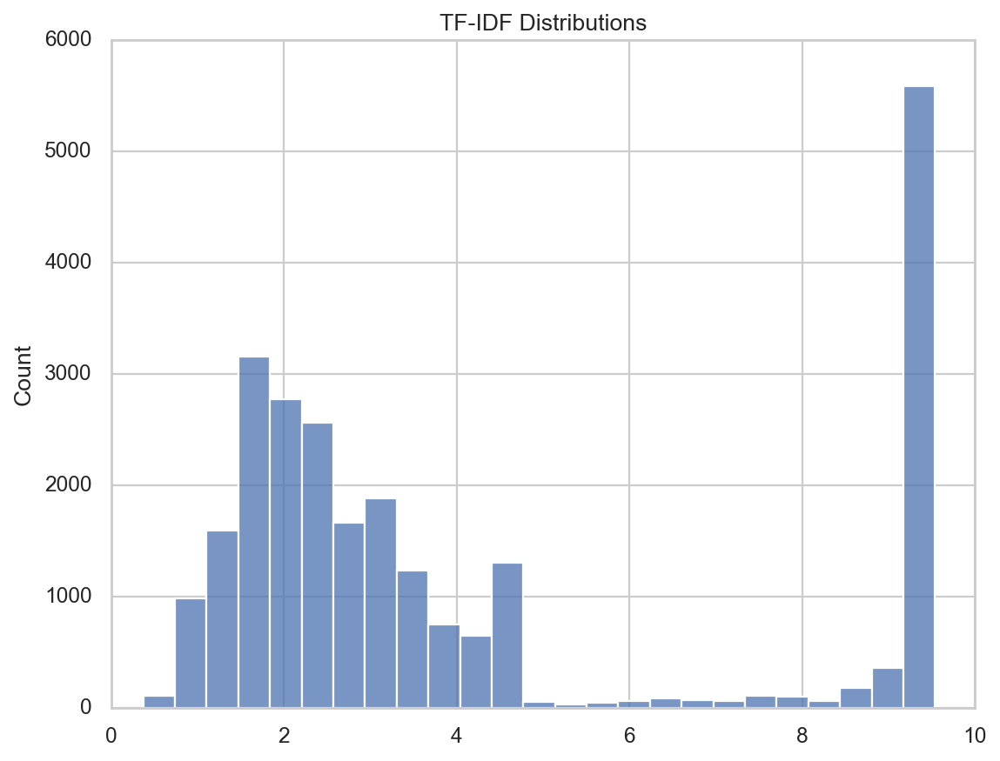
# Create a figure and subplots
fig, (ax1, ax2) = plt.subplots(1, 2, figsize=(14, 6))
p1 = sns.histplot(
computeTFIDF(
df_pii_phi_tidy[df_pii_phi_tidy["class_label"] == 1]["_dbas_field_name_tidy"]
),ax=ax1
)
p2 = sns.histplot(
computeTFIDF(
df_pii_phi_tidy[df_pii_phi_tidy["class_label"] == 0]["_dbas_field_name_tidy"]
),ax=ax2
)
p1.set_title("Histogram: TF-IDF for PII/PHI")
p2.set_title("Histogram: TF-IDF for NO PII-PHI ")
plt.suptitle("TF-IDF Distributions")
plt.tight_layout()
plt.show()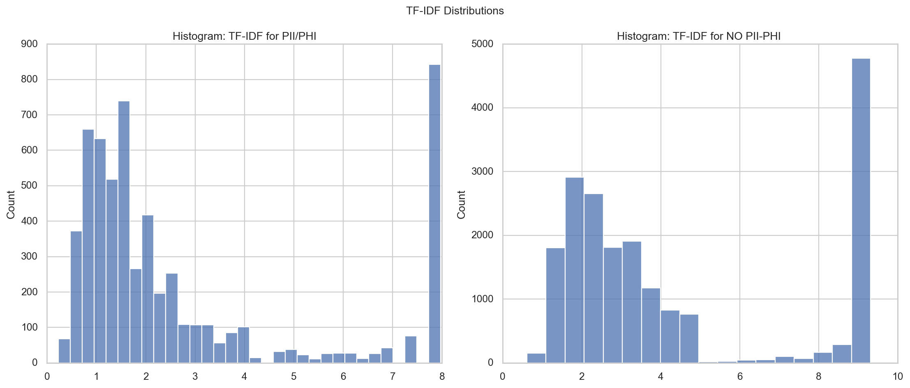
Inferences
Analysis of TF-IDF Distribution as follows,
Average TF-IDF: The average TF-IDF value within the corpus is 4.27. This indicates that, on average, words tend to be somewhat specific and informative in relation to the documents they appear in.
Standard Deviation: The standard deviation of TF-IDF values is 3.13. This suggests a significant spread in TF-IDF values, implying a variety of word specificities within the corpus.
Word Distribution: We observed that approximately 50% of the words have a TF-IDF value below 3. This suggests a notable presence of repetitive words across the corpus. These words likely contribute less to the overall informational content of individual documents.
Corpus Composition: Based on the TF-IDF distribution, the corpus appears to be a mixture of unique and non-unique words. The high average TF-IDF and standard deviation indicate the presence of both specific terms and frequently occurring words.
7.2 Develop Potential Solutions
7.2.1 MachineLearning Modeling-Classification Problem.
7.2.1.1 Data Preparations.
Text Preprocessing and Feature Engineering for Machine Learning Model.
In our machine learning model development process, we’ll focus on the dbas_field_name_tidy field from the dataset. This field contains the header text, which serves as our input or predictor variable. However, raw text data isn’t directly usable by machine learning algorithms.
Feature Engineering: Text to Numerical Conversion.
To address this challenge, we’ll perform feature engineering by converting the text data in dbas_field_name_tidy into numerical features. We’ll employ TF-IDF (Term Frequency-Inverse Document Frequency) Vectorizer specifically tailored for bigrams (two-word phrases). This technique considers both the frequency of words within a document (TF) and their rarity across the entire dataset (IDF). By focusing on bigrams, we leverage the insights from our earlier analysis indicating a predominance of short phrases within the header text.
Target Variable
Our model aims to perform a binary classification task. The target variable, named classlabel, is a two-class variable containing values of 0 or 1. These values correspond to the presence or absence of PII and PHI within the data:
- 0: Represents data that does NOT contain PII/PHI.
- 1: Represents data that contains PII/PHI
dbas_corpus = df_pii_phi_tidy["_dbas_field_name_tidy"]
dbas_vectorizer = TfidfVectorizer(ngram_range=(1, 2), stop_words="english")
dbas_pii_phi_vectors = dbas_vectorizer.fit_transform(dbas_corpus)y_target = df_pii_phi_tidy["class_label"]7.2.1.2 Model Validation:
Our machine learning project utilizes a dataset containing approximately 13,000 observations. As described earlier, these observations possess clearly defined input and output variables.
In machine learning, we train models on input data. The model learns patterns and relationships within the data and uses these to make predictions on unseen examples. While a model might perform well on the data it’s trained on, its performance on unseen data is crucial.
Here’s where the concepts of overfitting and underfitting come into play:
Overfitting: This occurs when a model becomes too attuned to the specific training data and fails to generalize well to unseen examples. It essentially “memorizes” the training data instead of learning the underlying patterns.
Underfitting: This happens when a model is too simple and lacks the capacity to capture the essential relationships within the training data. It leads to poor performance on both the training data and unseen data.
Mitigating Overfitting and Underfitting:
Fortunately, we can employ various model validation techniques to assess a model’s generalizability and address overfitting or underfitting issues. These techniques allow us to evaluate a model’s performance on unseen data and ensure it can effectively learn and apply its knowledge to new scenarios.
7.2.1.3 Train/Test Validation
This is the simplest and most common validation technique. Here’s how it works:
1.Split the data into two sets: training data (usually 70-80%) and testing data (remaining 20-30%).
2.Train the model on the training data.
3.Evaluate the model’s performance on the unseen testing data.
This gives us an idea of how well the model generalizes to new data.
For the Current problem-To evaluate the generalizability of our machine learning model, I’ll be utilizing the train-test split validation approach with an 80/20 split. and its summary as follows.
# Data splitting
X_train_header_text, X_test_header_text, Y_train_PIIPHI_flag, Y_test_PIIPHI_flag = (
train_test_split(
dbas_pii_phi_vectors.toarray(), y_target, random_state=2021, test_size=0.20
)
)| Type | Size |
|---|---|
| Total | 13963 |
| Train | 11170 |
| Test | 2793 |
7.2.2 Priliminary MachineLearning Modeling.
7.2.2.1 LogisticRegression,Bagging and Boosting(RandomForest and XGBoost)
Logistic Regression:
Simple and interpretable: Easy to understand and diagnose potential issues.
Works well for binary classification: Suitable for predicting probabilities of belonging to one of two classes (0 or 1).
May struggle with complex relationships: Limited ability to handle highly non-linear data.
Random Forest(Bagging):
Ensemble method: Combines multiple decision trees for improved accuracy and robustness.
Handles complex data well: Can capture non-linear relationships effectively.
Less interpretable: Can be difficult to understand the inner workings of the model.
XGBoost(Boosting):
Powerful ensemble method: Often achieves high accuracy on various machine learning tasks.
Flexible and efficient: Handles different data types and scales well for large datasets.
Hyperparameter tuning can be complex: Requires careful selection of model parameters for optimal performance.
# model_dbas_LRC = LogisticRegression()
# model_dbas_LRC.fit(X_train_header_text, Y_train_PIIPHI_flag)
# los_pred = model_dbas_LRC.predict(X_train_header_text)
# los_pred_ = model_dbas_LRC.predict(X_test_header_text)# custom_classification_metrics_report("LogisticRegression-Traininig", Y_train_PIIPHI_flag, los_pred)# custom_classification_metrics_report("LogisticRegression-Testing", Y_test_PIIPHI_flag, los_pred_)# _model_RFC_tuned = RandomForestClassifier(
# n_estimators=200, max_depth=30, max_features=60, random_state=2024
# )# _model_RFC_tuned.fit(X_train_header_text, Y_train_PIIPHI_flag)# los_tr_preds_rf = _model_RFC_tuned.predict(X_train_header_text)
# los_tes_preds_rf = _model_RFC_tuned.predict(X_test_header_text)7.2.2.2 Priliminary MachineLearning Model Summary Report.
df_metric = pd.read_excel(r'/Users/malleshamyamulla/Desktop/SSBBA/MBB_PROJECT/data/ssbba_model_metrics_v1.xlsx')df_metric| ModelType | Accuracy | ROC-AUC | F1 | Precision | Recall | |
|---|---|---|---|---|---|---|
| 0 | LogisticRegression-Traininig | 0.88747 | 0.73692 | 0.63869 | 0.95529 | 0.47971 |
| 1 | LogisticRegression-Testing | 0.87504 | 0.70946 | 0.58600 | 0.93561 | 0.42660 |
| 2 | RandomForest-Training | 0.98827 | 0.98766 | 0.97213 | 0.95807 | 0.98661 |
| 3 | RandomForest-Testing | 0.58145 | 0.71304 | 0.48160 | 0.32399 | 0.93782 |
| 4 | XGBoost-Tranining | 0.88568 | 0.73419 | 0.63294 | 0.94669 | 0.47539 |
| 5 | XGBoost-Testing | 0.87325 | 0.71407 | 0.59122 | 0.89199 | 0.44214 |
Here are the few points about priliminary model performances.
Training vs. Testing Performance:
All models have a significant drop in performance between the training and testing data. This suggests potential overfitting, especially for Random Forest.
Model-Specific Observations:
1.Logistic Regression:
1.Training accuracy (0.887) is reasonable, but ROC-AUC (0.737) suggests it might not be the best at distinguishing classes.
2.Precision (0.955) is high, indicating the model rarely makes false positives when predicting the positive class.
3.However, recall (0.480) is low, meaning it misses many actual positive cases
2.Random Forest:
1.Training performance is very high (accuracy and F1-score near 1), but testing performance is significantly lower (accuracy 0.581). This is a clear case of overfitting. The model memorized the training data and performs poorly on unseen data.
3.XGBoost:
1.Similar to Logistic Regression, training and testing performance show a gap, but it’s less severe than Random Forest. Performance metrics are comparable to Logistic Regression, with slightly lower precision and recall.
Conclusion:
Based on this limited data, Logistic Regression or XGBoost might be better initial choices for this task. However, further investigation is needed.
7.2.3 Experimentations:MachineLearning Models-Dealing with Class Imbalance Problem.
From the above summary table- three of the model’s precision is greater than to recall indicate a strong bias towards precision at the cost of recall. Let’s break down what this means:
High Precision(0.95):
Out of all the positive predictions of our model made, 95.0% were actually correct. In other words, the model is very good at avoiding false positives (classifying something positive when it’s actually negative).
Low Recall (0.42):
This is the concerning aspect. Out of all the actual positive cases in your data, the model only identified 42.0%. This means the model misses a significant portion of the true positives, resulting in false negatives (failing to classify something positive that actually is positive).
Interpretation:
This suggests our model prioritizes precision over recall. It excels at identifying truly positive cases but misses many of them overall. This could be because:
The data itself might be imbalanced, with far fewer positive cases than negative cases. The model learns to be cautious and avoids classifying things as positive unless very certain, leading to many false negatives.
The model training might be biased towards precision. Techniques like adjusting class weights or choosing an appropriate cost function during training could influence this bias.
Impact:
The impact of this bias depends on our specific application. In some cases, precision is more crucial. For instance, a Document Classifier with high precision might be desirable to avoid mistakenly marking important elements as PII/PHI (even if it misses NO-PII/PHI).
However, in many scenarios, missing a significant portion of positive cases (low recall) could be detrimental. For example, The same Document Classifier with low recall might miss many actual PII/PHI elements, leading to missed Potential Sensitive Informations to be extracted.
Recommendations:
sns.countplot(df_pii_phi_tidy,x='class_label')
plt.show()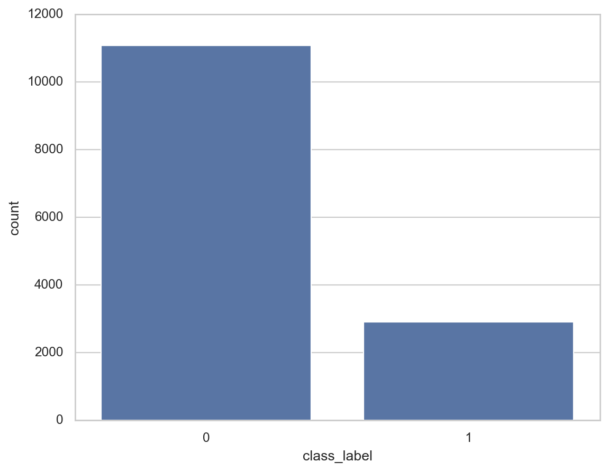
1.Our exploration of the data indicates a potential class imbalance issue for our machine learning classification model. As observed in the visualization, approximately 20% of the data points are classified as PII/PHI (positive class), while the remaining 80% belong to the NO-PII/PHI category (negative class).
2.Class imbalance occurs when a dataset has a significant difference in the number of examples between different classes. In our case, the positive class (PII/PHI) has a considerably lower representation compared to the negative class (NO-PII/PHI).
3.This class imbalance can negatively impact the performance of machine learning classification models. Many algorithms tend to prioritize the majority class during training, leading to poorer performance in classifying the minority class (PII/PHI in our case).
Found thtat data has class imbalance, we can address it through techniques like oversampling or undersampling.
Class Imbalance Solution Techniques:
1.Oversampling:
Increases the number of data points in the minority class.
Techniques like duplicate sampling or Synthetic Minority Oversampling Technique (SMOTE) can be used.
Benefit: Helps the model learn the characteristics of the minority class more effectively.
Drawback: Can lead to overfitting if not done carefully.
2.Undersampling:
Reduces the number of data points in the majority class.
Techniques like random undersampling or near-miss sampling can be used.
Benefit: Creates a more balanced dataset for training.
Drawback: Can lead to loss of information from the majority class.
| type | sampling_tech | model | roc_auc |
|---|---|---|---|
| UNDER | random | LogisticRegression | 0.84 |
| UNDER | random | RanddomForest | 0.72 |
| UNDER | random | XGBoost | 0.77 |
| OVER | random | LogisticRegression | 0.86 |
| OVER | random | RanddomForest | 0.77 |
| OVER | random | XGBoost | 0.80 |
| OVER | SMOTE | LogisticRegression | 0.87 |
| OVER | SMOTE | RanddomForest | 0.74 |
| OVER | SMOTE | XGBoost | 0.82 |
From the above table OVER SAMPLE could be the choice for our classification model
The provided table summarizes the performance of various machine learning models trained on a potentially imbalanced dataset.
The table compares the impact of undersampling (UNDER) and oversampling (OVER) techniques, along with the baseline performance without sampling (type absent).
We’ve also explored the effect of using SMOTE (Synthetic Minority Oversampling Technique) within the oversampling approach.
Oversampling Potential: Based on the results, oversampling techniques (particularly OVER-SMOTE) generally yielded comparable or slightly better ROC-AUC scores for Logistic Regression and XGBoost compared to undersampling or no sampling. However, Random Forest performance seems less affected by the sampling technique.
SMOTE creates new data points for the minority class, essentially adding synthetic neighbors to existing minority examples. This helps the machine learning model learn the minority class better. this has been considered for doing the over sampling within our data. the oversampled data will be trained and analyzed in the next steps.
7.2.4 MachineLearning Model Tuning,Evaluating,Selection,Interpreting and Finalizing.
The below table shows that the data has been balanced, with each class in the target variable having the same number of data points.
| classlabel | total |
|---|---|
| 0 | 8854 |
| 1 | 8854 |
To train the machine learning model, we will follow these steps:
1.Hyperparameter tuning:
We will use GridSearchCV to optimize the parameters of each classifier. This ensures we find the best settings for each model’s performance.
2.Model evaluation:
We will evaluate the resulting models using metrics like accuracy and ROC_AUC. This helps us compare their performance and identify the most effective model.
3.Model selection:
Based on the evaluation results and specified requirements, we will select the best performing classifier for our needs.
Through hyperparameter tuning, we found these parameters to be most effective for training each classification model:
| model | recommended_parameters |
|---|---|
| Logistic Regression | penalty:L2,C:1.0,fit_intercept:True,solver:liblinear |
| Bagging(RandomForest) | max_depth:30,max_features:60,n_estimators:200 |
| Boosting(XGBOOST ) | gamma:0,learning_rate:0.05,max_depth:5,reg_lambda:5 |
custom_SMOTE_spec = SMOTE(random_state=2024)
X_header_SMOTE, Y_pii_phi_SMOTE = custom_SMOTE_spec.fit_resample(
X_train_header_text, Y_train_PIIPHI_flag
)model_dbas_LRC = LogisticRegression()
model_dbas_LRC.fit(X_header_SMOTE, Y_pii_phi_SMOTE)
los_pred = model_dbas_LRC.predict(X_header_SMOTE)
los_pred_ = model_dbas_LRC.predict(X_test_header_text)7.2.4.1 Logistic Regression.
custom_classification_metrics_report('LogisticRegression-Training',Y_pii_phi_SMOTE,los_pred)-------------------------------------------------------------------
LogisticRegression-Training#:ConfusionMatrix and ROC-AUC Curve
-------------------------------------------------------------------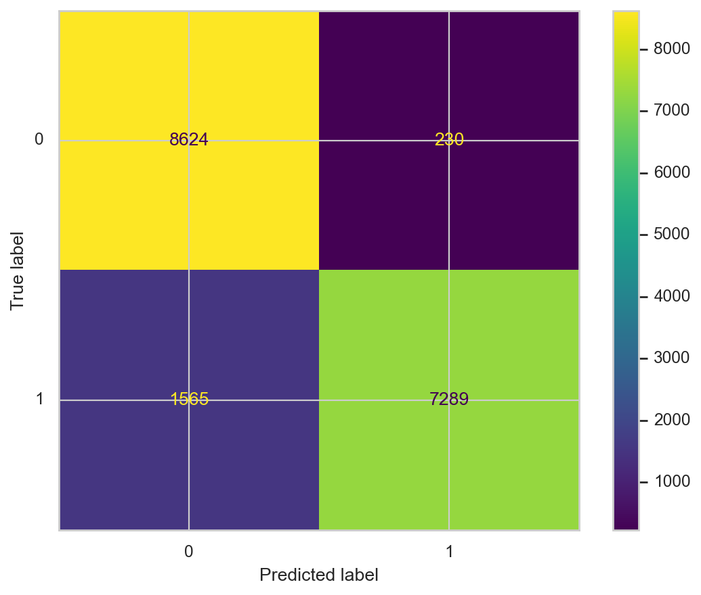
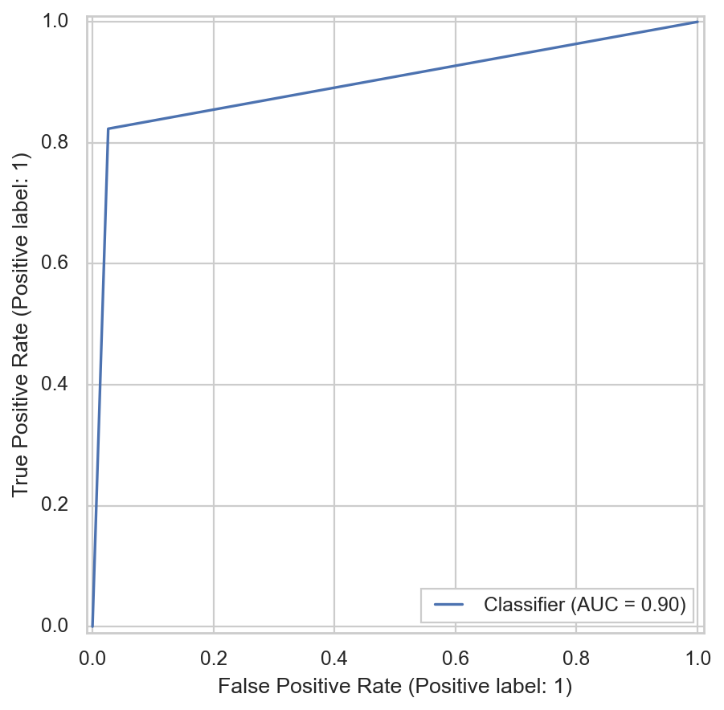
| Accuracy | ROC-AUC | F1-Score | Precision | Recall | |
|---|---|---|---|---|---|
| LogisticRegression-Training | 0.89863 | 0.89863 | 0.89037 | 0.96941 | 0.82324 |
custom_classification_metrics_report('LogisticRegression-Testing',Y_test_PIIPHI_flag,los_pred_)-------------------------------------------------------------------
LogisticRegression-Testing#:ConfusionMatrix and ROC-AUC Curve
-------------------------------------------------------------------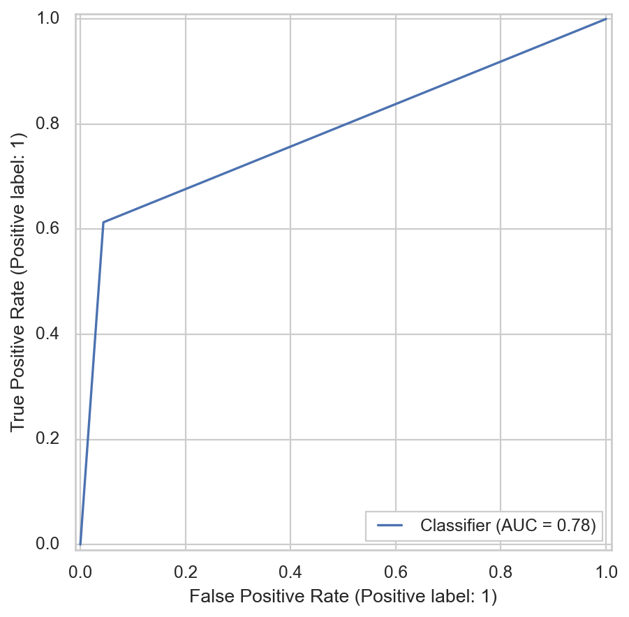
| Accuracy | ROC-AUC | F1-Score | Precision | Recall | |
|---|---|---|---|---|---|
| LogisticRegression-Testing | 0.88507 | 0.78466 | 0.68865 | 0.7854 | 0.61313 |
7.2.4.2 Bagging(RandomForest).
_model_RFC_tuned = RandomForestClassifier(
n_estimators=200, max_depth=30, max_features=60,random_state=2024,
)
_model_RFC_tuned.fit(X_header_SMOTE, Y_pii_phi_SMOTE)
los_tr_preds_rf = _model_RFC_tuned.predict(X_header_SMOTE)
los_tes_preds_rf = _model_RFC_tuned.predict(X_test_header_text)custom_classification_metrics_report(
"Bagging-Training", Y_pii_phi_SMOTE, los_tr_preds_rf
)-------------------------------------------------------------------
Bagging-Training#:ConfusionMatrix and ROC-AUC Curve
-------------------------------------------------------------------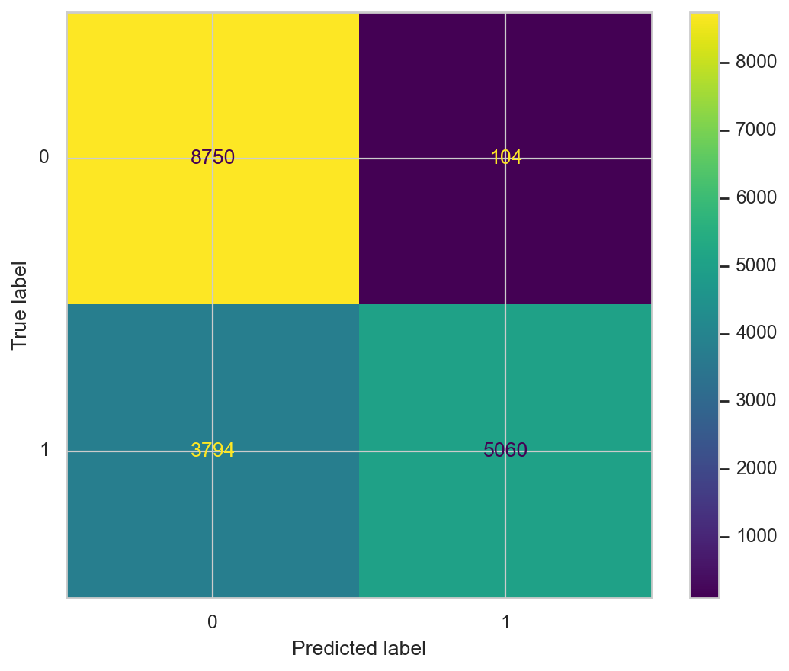
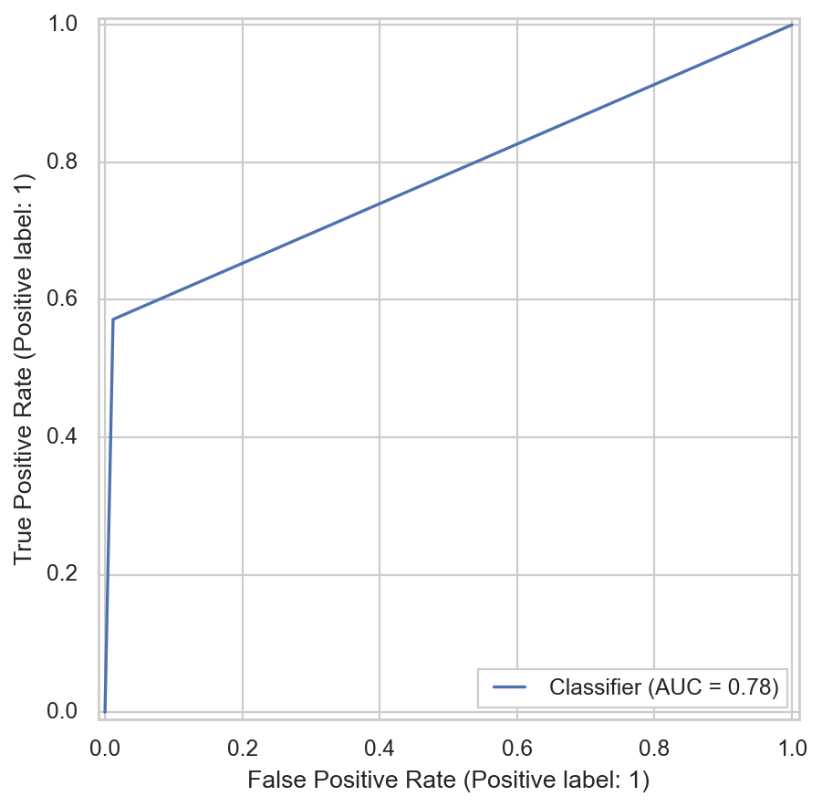
| Accuracy | ROC-AUC | F1-Score | Precision | Recall | |
|---|---|---|---|---|---|
| Bagging-Training | 0.77987 | 0.77987 | 0.72193 | 0.97986 | 0.57149 |
custom_classification_metrics_report(
"Bagging-Testing", Y_test_PIIPHI_flag, los_tes_preds_rf
)-------------------------------------------------------------------
Bagging-Testing#:ConfusionMatrix and ROC-AUC Curve
-------------------------------------------------------------------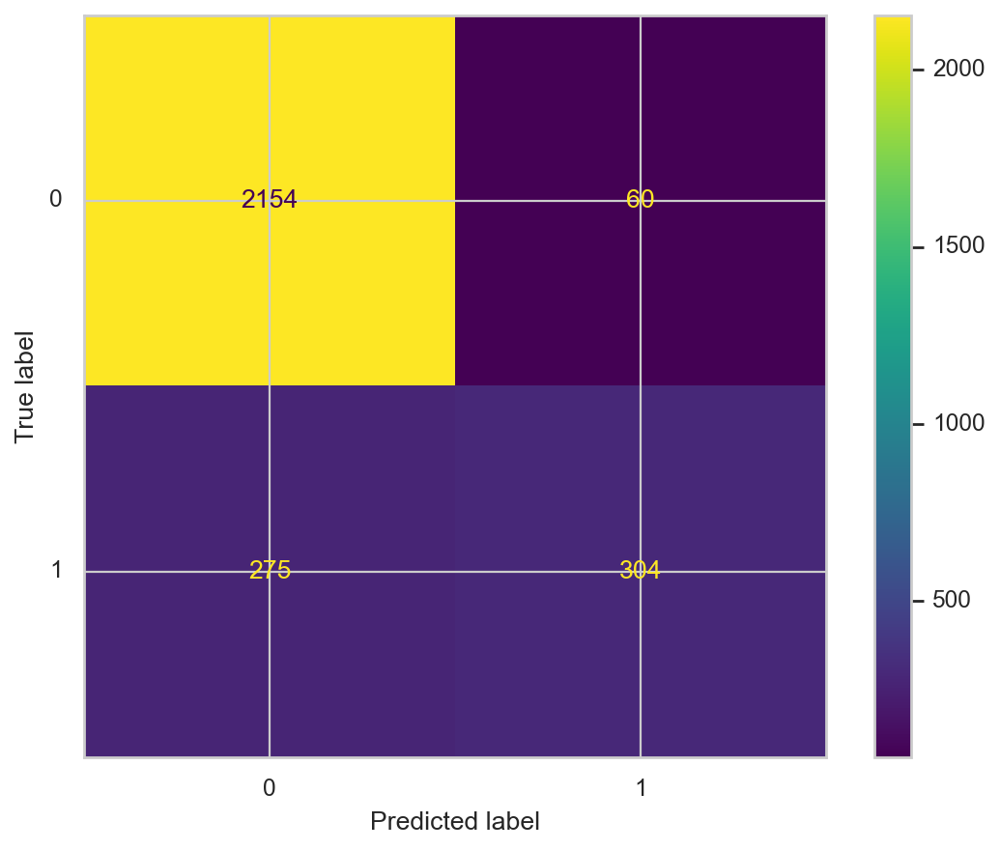
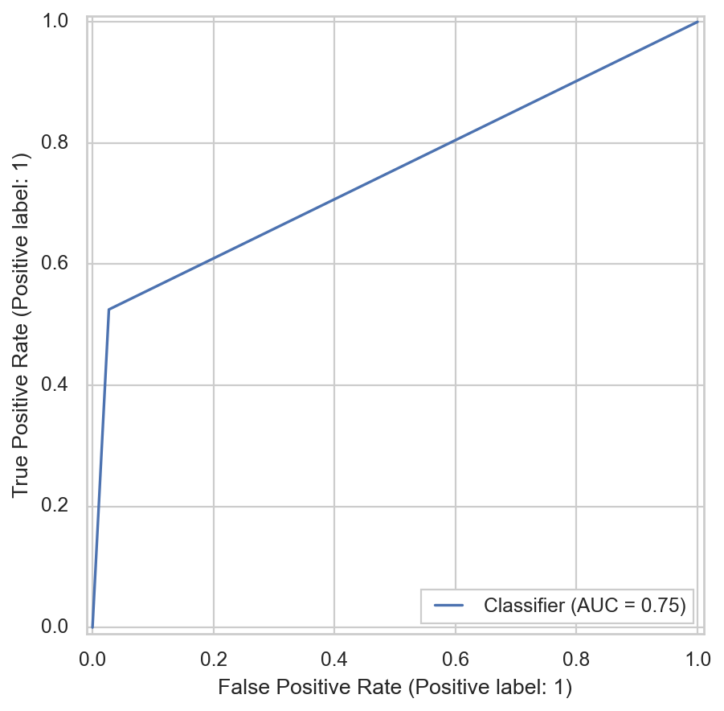
| Accuracy | ROC-AUC | F1-Score | Precision | Recall | |
|---|---|---|---|---|---|
| Bagging-Testing | 0.88006 | 0.74897 | 0.64475 | 0.83516 | 0.52504 |
7.2.4.3 Boosting(XGBoost).
_model_XGB_D_tuned = xgb.XGBClassifier(objective="binary:logistic", seed=2024)
_model_XGB_D_tuned.fit(X_header_SMOTE, Y_pii_phi_SMOTE)
los_tr_preds_XGB = _model_XGB_D_tuned.predict(X_header_SMOTE)
los_tes_preds_XGB = _model_XGB_D_tuned.predict(X_test_header_text)custom_classification_metrics_report('Boosting-Training',Y_pii_phi_SMOTE,los_tr_preds_XGB)-------------------------------------------------------------------
Boosting-Training#:ConfusionMatrix and ROC-AUC Curve
-------------------------------------------------------------------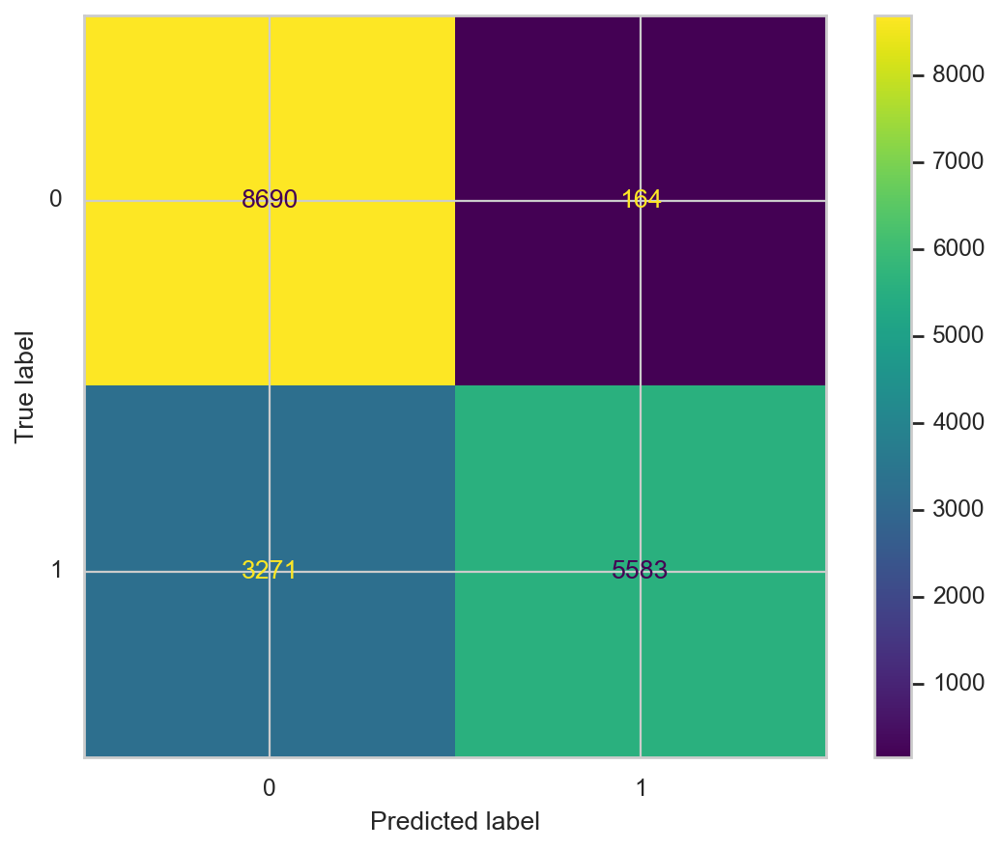
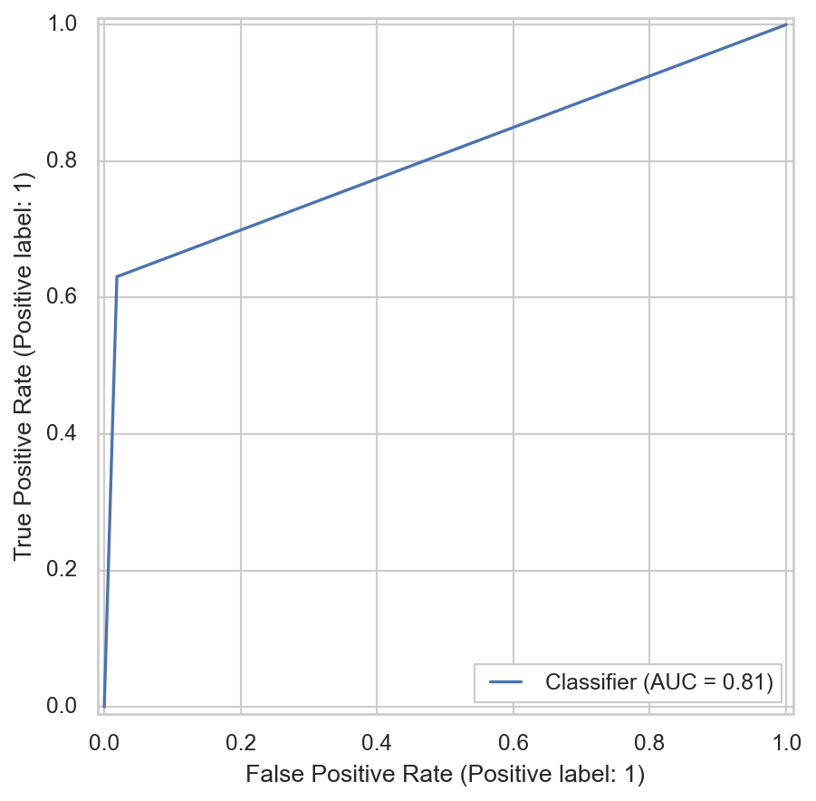
| Accuracy | ROC-AUC | F1-Score | Precision | Recall | |
|---|---|---|---|---|---|
| Boosting-Training | 0.80602 | 0.80602 | 0.76474 | 0.97146 | 0.63056 |
custom_classification_metrics_report('Boosting-Testing',Y_test_PIIPHI_flag,los_tes_preds_XGB)-------------------------------------------------------------------
Boosting-Testing#:ConfusionMatrix and ROC-AUC Curve
-------------------------------------------------------------------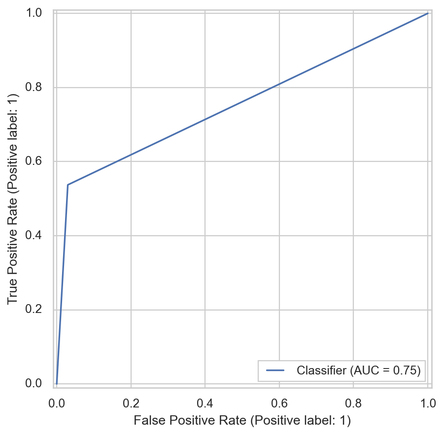
| Accuracy | ROC-AUC | F1-Score | Precision | Recall | |
|---|---|---|---|---|---|
| Boosting-Testing | 0.88042 | 0.75366 | 0.65063 | 0.82493 | 0.53713 |
7.2.4.4 Model Selection and Interpretations.
df_metric_final = pd.read_excel(r'/Users/malleshamyamulla/Desktop/SSBBA/MBB_PROJECT/data/sds_final_model_metrics.xlsx')df_metric_final| ModelType | Accuracy | ROC-AUC | F1 | Precision | Recall | |
|---|---|---|---|---|---|---|
| 0 | LogisticRegression-Traininig | 0.89863 | 0.89863 | 0.89037 | 0.96941 | 0.82324 |
| 1 | LogisticRegression-Testing | 0.88507 | 0.78466 | 0.68865 | 0.78540 | 0.61313 |
| 2 | RandomForest-Training | 0.77987 | 0.77987 | 0.72193 | 0.97986 | 0.57149 |
| 3 | RandomForest-Testing | 0.88006 | 0.74897 | 0.64475 | 0.83516 | 0.52504 |
| 4 | XGBoost-Tranining | 0.80602 | 0.80602 | 0.76474 | 0.97146 | 0.63056 |
| 5 | XGBoost-Testing | 0.88042 | 0.75366 | 0.65063 | 0.82493 | 0.53713 |
Accuracy: This represents the overall percentage of correct predictions made by the model. Here, all models performed well in training (around 80-90% accuracy). However, in testing with unseen data, their accuracy dropped slightly (around 88%).
ROC-AUC: This metric measures how well the model distinguishes between positive and negative cases. All models have similar ROC-AUC scores in both training and testing, indicating a decent ability to differentiate classes.
1.Logistic Regression:
- This model’s performance dropped the most between training and testing (accuracy -1%, ROC-AUC -12%). This suggests some overfitting on the training data.
2.Random Forest:
- This model’s performance improved slightly in testing compared to training for accuracy (+10%) but dropped a bit for other metrics (F1, Precision, Recall). This could indicate some issues with model complexity or randomness in the forest.
3.XGBoost:
XGBoost achieved a slight improvement in testing accuracy (+7%) compared to Random Forest and Logistic Regression.
Other Metrics such as F1, Precision, and Recall scores decreased slightly compared to its training performance, they remain better overall than those of Random Forest and Logistic Regression.
With larger datasets, XGBoost’s performance across all metrics may improve further. We would be investigating hyperparameter tuning to optimize XGBoost for even better results in future experiments.
After evaluating several models, XGBoost emerged as the most effective option for classifying PII/PHI and NO-PII/PHI data within documents.
7.2.5 MachineLearning Model Deployment in Streamlit Cloud App.
Having proven its effectiveness in predicting PII/PHI and NO-PII/PHI elements, the final XGBoost model is now deployed on Streamlit Cloud. This means we can easily access it through your web browser for convenient predictions.
Please click on the below blue color text or copy the URL to view it in browser.
URL Link: https://ssbbba2024-sxsvtbi6newjbkauulyan7.streamlit.app
7.3 Propose & Validate New Process.
7.3.1 New Process Flow Diagram.
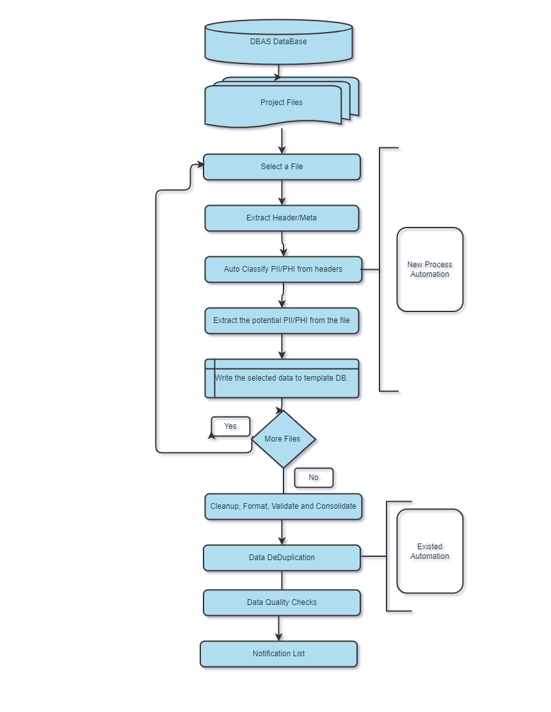
7.3.1.1 Streamlining Information Review and Extraction.
This new process automation is a game-changer! It will significantly improve our ability to review and extract information with both speed and accuracy. Here’s how:
Reduced Manual Effort: Manual tasks will be minimized, freeing up valuable human resources for other critical activities.
Enhanced Accuracy: Automation helps to reduce human error, leading to more accurate information extraction.
The provided process flow diagram offers a clear picture of how automation integrates into the new approach:
1.Data Gathering: Information is efficiently collected from various sources like databases and files.
2.Automated Classification and Extraction: The data is then fed into a machine learning (ML) PII/PHI classifier, which acts as the automation tool. This powerful tool excels at identifying and extracting the desired information (PII/PHI and NO-PII/PHI elements) with impressive precision.
3.Seamless Integration with Existing Automation: Once the ML classifier completes the extraction phase, the remaining data mining steps seamlessly integrate with existing rule-based and fuzzy-based techniques. These established automation methods further accelerate the overall process.
4. Human Oversight Ensures Quality: While automation takes center stage, human expertise remains crucial. Analysts will review a representative sample of the extracted data by the classifier. This human oversight ensures that any missed or overly classified information is carefully addressed, guaranteeing the highest quality results.
This combined approach, leveraging the power of automation and human expertise, promises a significant leap forward in information review and extraction efficiency.
8 DMAIC: Control
8.1 Establish Improved Performance.
In an improve phase we have developed an automation to address the root causes which hamper thes document classifications accuracies, extractions difficulties such as more number of sheets, big data, etc etc.
We haven’t applied it on the ongoing process to see the results how it is performing, as stated in the new proposed process we will implement the automation on good number of projects atleaset 50, will record all the required metrics such how much time it takes to complete the phase-1 tasks, classification accuracies, false positive, false negative ratios, notification delivery time, how are the complex files being handled, how much time it spent for processing big data etc. etc. So that we would be able to infer how much the new process has been improved caluclating the Cp,Cpk,SigmaLevel and DPMo.
8.1.1 Addressing Challenges and Measuring Improvement
We’ve developed an innovative automation solution to tackle the root causes behind classification inaccuracies and extraction difficulties. These challenges often arise due to factors like a high number of document sheets and large data volumes.
8.1.2 Pilot Testing and Metrics Collection
Before integrating automation into ongoing processes, we’ll conduct a pilot test on a significant number of projects (at least 50). During this pilot, we’ll meticulously record key metrics to gauge the effectiveness of the new approach. These metrics will include:
1.Phase-1 Completion Time: We’ll track how much faster the new process completes the initial tasks compared to the current approach.
2.Classification Accuracy: This will measure the ability of the automation to correctly identify PII/PHI and NO-PII/PHI elements.
3.Error Rates: We’ll monitor both false positive (incorrectly identified PII/PHI) and false negative (missed PII/PHI) rates.
4.Notification Delivery Time: We’ll assess how quickly the data breach notification lists are prepared.
5.Complex File Handling: We’ll evaluate the automation’s efficiency in processing documents with a large number of sheets.
6.Big Data Processing Time: We’ll measure the time taken to process large datasets.
8.1.3 Evaluating Success with Statistical Methods
By collecting this comprehensive data, we can calculate metrics like Cp, Cpk, Sigma Level, and DPMO. These statistical tools will provide a clear picture of how significantly the new process has improved overall efficiency and accuracy.
This pilot testing approach allows us to assess the automation’s impact in a controlled environment before full-scale deployment. The gathered data and subsequent analysis will provide objective evidence of the new process’s effectiveness.
8.2 Control Plan
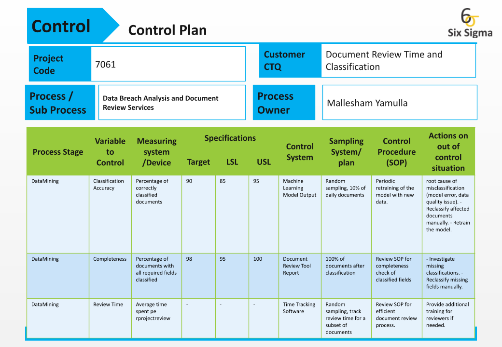
8.3 Project Sign-Off
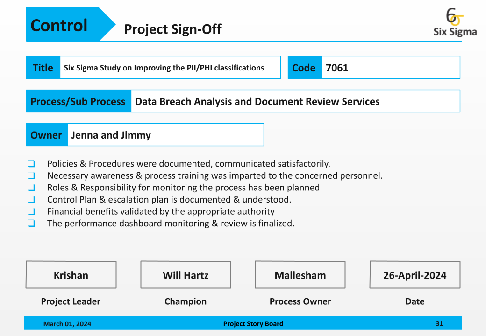
8.4 Project Summary
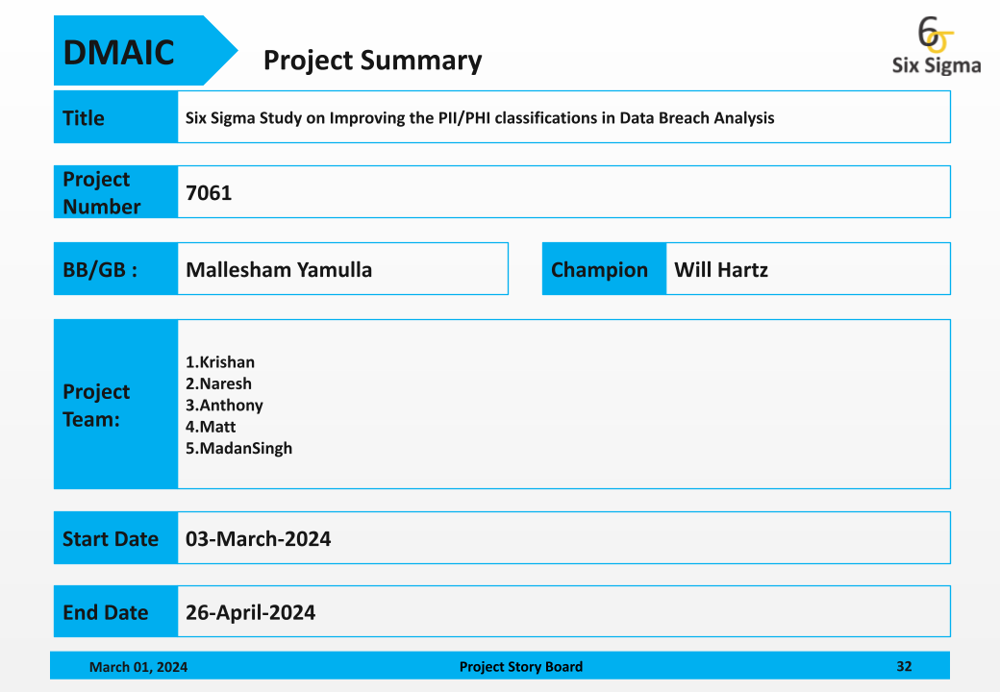
8.5 Executive Summary
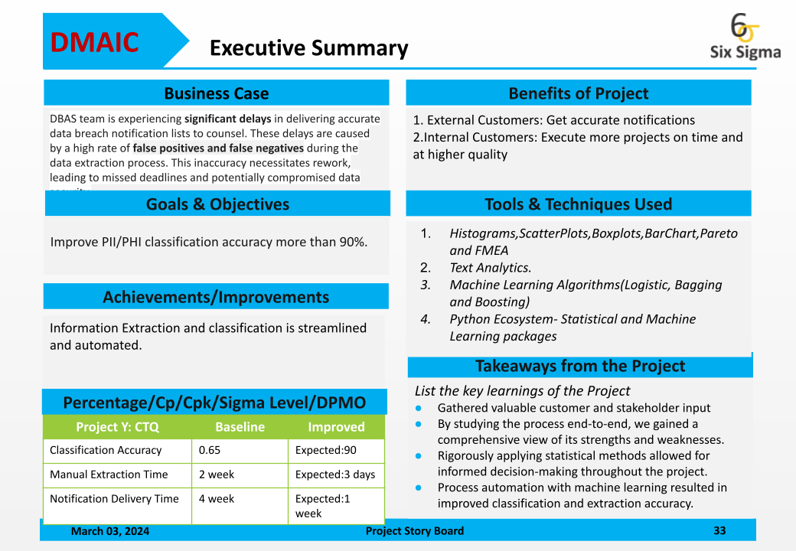
9 Bibliography
9.1 Refereces-Books and Tools
Six Sigma-Green Belt(Advanced) by GMR- ISI,Hyderabad.
StatQuest Illustrated Guide to MachineLearning.